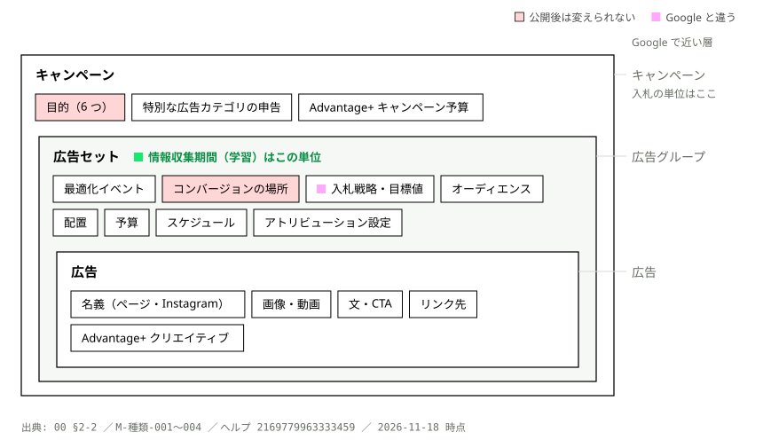
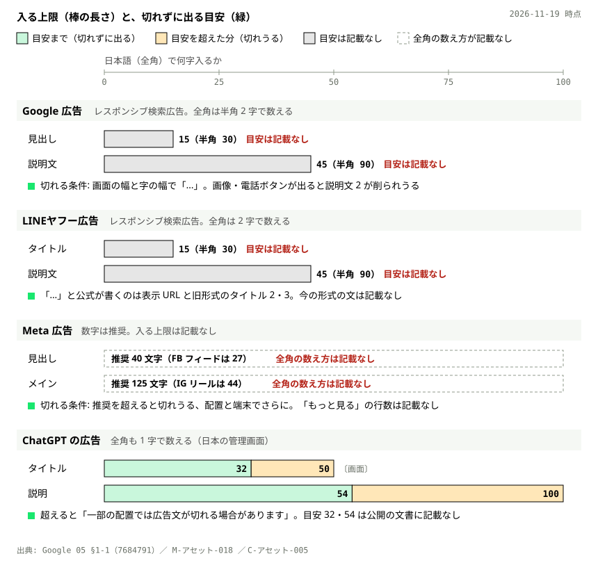

[ Meta / 00 ]
00全体像
位置づけ: Meta 広告（Facebook・Instagram・Messenger・Threads・Audience Network。WhatsApp の配置も一部ある）の知識ベースの入口。各論（01 配信の仕組み、02 入札と予算、04 構成、05 クリエイティブ、06 計測、23 ターゲティング、26 効果測定、27 アカウント、31・34 審査）を書く前の「地図」。Google 広告の知識ベース（../Google広告の基礎/）を知っている運用者が、何を持ち込んでよく、何を持ち込むと間違えるかが分かるよ
このメモについて
- 確認日: 2026-11-18（Meta の開発者向け文書〔Marketing API・Conversions API・変更履歴〕の本文、広告基準〔transparency.meta.com〕の本文、Meta for Business と Meta Newsroom の発表の本文を取得。ビジネスヘルプセンターは初版では本文が取れず抜粋で書き、同日の裏取りと第 2 段でアプリ内のブラウザから日本語…
- 位置づけ: Meta 広告（Facebook・Instagram・Messenger・Threads・Audience Network。WhatsApp の配置も一部ある）の知識ベースの入口。各論（01 配信の仕組み、02 入札と予算、04 構成、05 クリエイティブ、06 計測、23 ターゲティング、26 効果測定、27 アカウント、31・34 審査）を書く前の「地図」。Google 広告の知…
- 使い方: 確認日から 30 日を過ぎていたら、出典を取り直してから使う。Meta は 2025〜2026 年に名前と仕組みを大きく変えている（Advantage+ の統合、アトリビューションの定義の変更、ターゲティングの縮小、配置の廃止）。とくに §4・§9 は変わりやすい
- 凡例: ✓ 公式で確認 ／ △ 資料によって食い違う ／ ? 確認できず
- 主張の出どころの印: 公式Meta のヘルプ・ポリシー・開発者文書・公式ブログ・公式発表 ／〔報道〕報道機関（公式の発表を確かめられないもの）／〔第三者〕媒体外の解説 ／〔推測〕書き手の推測
対比
LOWEST_COST_WITHOUT_CAP）／目標に基づく＝結果の単価目標（COST_CAP）・ROAS 目標（LOWEST_COST_WITH_MIN_ROAS）／手動＝入札価格上限（LOWEST_COST_WITH_BID_CAP）✓公式本文（S-01・S-47）06§5event_id＋イベント名で除く ✓公式本文（S-15・S-17）。アトリビューションは広告セット単位で、既定は「クリック後 7 日・ビュー後 1 日」✓公式本文（S-28）＋エンゲージスルー（旧エンゲージビュー）の扱いは △（§9-4）NONE で外れるか」を選べる（S-21）。社会問題の広告は日本でも認証が要る（§10-4）地図
本文
0.先に知っておくこと（この初版の限界）
- ビジネスヘルプセンター（facebook.com/business/help/…）は本文が取れなかった
- 第 2 段（2026-11-18）で、Claude のアプリ内のブラウザを使い、日本語ヘルプの本文で約 35 ページを取り直した
- ヘルプの日本語ページ名は一部だけ確かめた
- 開発者向け文書の中にも古い記述が残っている
- 1ビジネスヘルプセンター（facebook.com/business/help/…）は本文が取れなかった。
curl で HTML を取っても本文は入っておらず（ページ名だけ）、WebFetch も同じだった。学習フェーズ、入札戦略、関連度診断、アトリビューション設定、Advantage+ オーディエンスなど、運用の判断に効く細部の多くはヘルプにしか無い。この初版では、①開発者向け文書（本文が Markdown で取れる）、②広告基準と公式の発表（本文が取れる）、③ヘルプは検索結果に出た公式ページの抜粋、の 3 段で書いた。③は「抜粋」と印を付けた
- 第 2 段（2026-11-18）で、Claude のアプリ内のブラウザを使い、日本語ヘルプの本文で約 35 ページを取り直した（入札戦略・予算・Advantage+・関連度診断・オークション・審査・アカウントの制限と上限・特別な広告カテゴリ・縦横比と文字数と動画の長さ）。読めた主張は印を「本文」に上げ、違っていたものは直した（記録は
94_裏取りの記録.md、末尾の変更の記録）。約 35 ページを読んだところでログインを求められるようになり、残り（エンゲージメント率・コンバージョン率ランキングの個別ページ、AEM、A/B テスト、Advantage+ 配置など）は「抜粋」のまま - 統合の段（2026-11-18）で、各論（
01・02・06・23・26）が本文で確かめたことのうち、00 の記述が古い・推測だったものを直した（AEM、A/B テストとリフトの条件、ランキングの個別ページ、配置の手動選択、時間帯指定など）。各節の末尾に「くわしくは 02§x」の形で各論への参照を足した。記録は末尾の変更の記録
- 第 2 段（2026-11-18）で、Claude のアプリ内のブラウザを使い、日本語ヘルプの本文で約 35 ページを取り直した（入札戦略・予算・Advantage+・関連度診断・オークション・審査・アカウントの制限と上限・特別な広告カテゴリ・縦横比と文字数と動画の長さ）。読めた主張は印を「本文」に上げ、違っていたものは直した（記録は
- 2ヘルプの日本語ページ名は一部だけ確かめた。
例: 学習フェーズのページの日本語の名前は「情報収集期間について」（ページの
<title>を取得して確認）。管理画面の日本語表示名は、確かめられたものだけ日本語で書き、確かめられないものは英語名を併記した - 3開発者向け文書の中にも古い記述が残っている。
例: 日予算の上振れを「25%」と書くページ（S-18）と、「75% に上げた」と書く変更履歴（S-06）が並んでいる。食い違いは △ にして両方を書いた
1.Google との違い（対比表）
- 検索語句
- 総合価値
- 消化金額に基づく
- 目標に基づく
- ＝入札価格上限（
LOWEST_COST_WITH_BID_CAP）✓公式本文（S-01・S-47） | △ - 最後の重要な編集から 1 週間で約 50 件の最適化イベント
Google 側の記述は ../Google広告の基礎/00_Google広告の機械学習の全体像.md（以下 G00）と 90_核となる理解.md（以下 G90）に合わせた。
| 観点 | Google 広告 | Meta 広告 | 運用の判断への効き方 |
|---|---|---|---|
| アカウントの階層 | MCC（クライアント センター）→ アカウント → キャンペーン → 広告グループ → 広告・キーワード | ビジネスポートフォリオ（旧ビジネスマネージャ）→ 広告アカウント → キャンペーン → 広告セット → 広告。ページ・Instagram アカウント・データセット（ピクセル）・カタログは、ポートフォリオが持つ別の「資産」。資産は 1 つのポートフォリオにだけ属する ✓公式本文（S-52・S-02） | 広告アカウントの権限だけでは足りない。ページ・Instagram・データセットの権限がそろわないと出稿も計測もできない。代理店に渡すのは「ポートフォリオのパートナー権限」で資産ごと |
| 広告を出す引き金 | 検索語句（検索）。人の指定は補助（オーディエンス、最適化されたターゲティング） | 人。フィードや動画を見ている人に、広告セットのオーディエンス条件の中から配信システムが選んで出す。検索語句は無い ✓公式本文（S-41） | 「需要の刈り取り」ではなく「需要を起こす」側の媒体。指名検索のような手堅い需要は無く、クリエイティブが「誰に届くか」まで決める（§7-1） |
| 何を競うか | 広告ランク（入札単価・広告と LP の品質・下限値・競争力・検索の背景・アセットの見込み効果）G90 | 総合価値（01・33 とヘルプの本文は「全体的な価値」と書く。同じもの △ 表記ゆれ）。主に「入札価格・推定アクション率・広告品質」の 3 要素で決まり、最低価格（価格下限）が表示と支払額に影響しうる。入札価格を超えて請求はしない ✓公式本文（今の日本語ヘルプ「広告オークションについて」S-75。式「入札額 × 推定アクション率 ＋ 広告の品質」は 2020 年の解説 S-41） | 入札を上げるより、推定アクション率（その人が成果に至る見込み）と品質（低品質の特徴が無いこと）を上げるほうが効く局面が多い |
| 入札の単位 | キャンペーン（ポートフォリオ戦略なら複数キャンペーン） | 広告セット（キャンペーン予算を使うとキャンペーンで 1 つの戦略）✓公式本文（S-19） | 目標単価は広告セット（またはキャンペーン）ごとに置く。Google の「アカウント全体の検索語句単位で学ぶ」に当たる仕組みは確認できず ? |
| 自動入札の種類 | コンバージョン数の最大化／目標コンバージョン単価（目標アクション単価）／コンバージョン値の最大化／目標広告費用対効果／クリック数の最大化 など | 日本語ヘルプの 3 分類: 消化金額に基づく＝最大数量・バリュー最大化（LOWEST_COST_WITHOUT_CAP）／目標に基づく＝結果の単価目標（COST_CAP）・ROAS 目標（LOWEST_COST_WITH_MIN_ROAS）／手動＝入札価格上限（LOWEST_COST_WITH_BID_CAP）✓公式本文（S-01・S-47） | △ 「手動入札」の範囲が文書で違う: 日本語ヘルプは入札価格上限だけを「手動入札」と呼ぶ（S-47 本文）。開発者文書は単価目標・ROAS 目標・入札上限の 3 つを「manual bidding」と呼ぶ（S-01）。管理画面の言葉はヘルプに合わせ、「目標に基づく入札」を Google の目標値つきの自動入札に当てて読む（§12） |
| 「学習」の意味 | 入札戦略のステータス「学習中」。最長 7 日。引き金は新しい戦略・構成の変更・最適化対象の変更。予算・目標値・広告・ターゲティングの変更では出ない（G00 §3-1） | 広告セットの「情報収集期間」（英: learning phase）。最後の重要な編集から 1 週間で約 50 件の最適化イベントで抜ける目安。大幅な編集には、ターゲット・クリエイティブ・最適化イベントの変更、新しい広告の追加、7 日以上の停止、入札戦略の変更が入り、予算・目標の金額は変更の度合いしだいで入る ✓公式本文（ヘルプ 316478108955072、§6-2） | Google の常識「予算やクリエイティブを変えても学習中にならない」を持ち込むと誤る。Meta ではクリエイティブの差し替えも、広告の追加も、7 日以上の停止も引き金（数日の停止は一覧に無い）。変更はまとめて 1 回で（§6） |
| 待つ目安 | 成果が落ち着くまでコンバージョン サイクル 1〜2 回。評価は 2 サイクルか 2 週間の長いほう（G00 §3-1） | 1 週間に約 50 件。届かないと「情報収集が不十分」（英: Learning limited。日本語の表示名は 2026-11-18 に本文で確認）✓公式抜粋（S-45） | 「週 50 件」を満たす単位まで広告セットをまとめる。最適化イベントを件数の多いもの（購入→カート追加など）に上げるのも手（§6-5） |
| 品質の評価 | 品質スコア（1〜10、キーワード単位、診断用、オークションの入力ではない）G90 | 広告の関連度診断（品質ランキング・エンゲージメント率ランキング・コンバージョン率ランキング。広告単位、同じオーディエンスを競う広告との相対順位、オークションの入力ではない、表示 500 回未満では出ない）✓公式本文（S-49） | どちらも「診断値はオークションの入力ではない」で同じ。ただし Meta は 3 つの組み合わせで原因を切り分ける作り（§3-3） |
| ターゲティングの考え方 | 検索は語句。オーディエンスは「観察」か「絞り込み」。P-MAX のオーディエンス シグナルは手がかり | 既定は Advantage+ オーディエンス。地域・最低年齢・言語・カスタムオーディエンスの除外だけが「守られる制約」で、年齢・性別・詳細ターゲット・類似・カスタムオーディエンスは「提案」（手がかり）✓公式本文（S-23・S-54）。特別な広告カテゴリのキャンペーンでは Advantage+ オーディエンスを使えない（S-54 本文） | Google の P-MAX のシグナルに近い。「絞ったつもり」でも外へ広がる。絞りが必須の商材は「制約」に置けるものだけで守る（§7） |
| クリエイティブの単位 | 広告グループの中の広告（レスポンシブ検索広告の見出し・説明文などのアセット） | 広告（画像・動画・カルーセル・コレクションなど）。1 広告に複数素材を入れて配信システムに選ばせる「フレキシブル形式」や、自動で加工する「Advantage+ クリエイティブ」がある ✓公式本文（S-33・S-34） | Meta ではクリエイティブがターゲティングの役目も担う〔推測〕（Advantage+ オーディエンスの下では、誰に出るかを素材が左右する）。素材の数と幅が運用の中心 |
| 成果の計測 | Google タグ、拡張コンバージョン、オフライン取り込み。クリックの計測期間は既定 30 日（1〜90 日）G90・06§5 | Meta ピクセル（ブラウザ）＋コンバージョン API（サーバー）を重ねる「冗長な設定」が推奨。重複は event_id＋イベント名で除く ✓公式本文（S-15・S-17）。アトリビューションは広告セット単位で、既定は「クリック後 7 日・ビュー後 1 日」✓公式本文（S-28）＋エンゲージスルー（旧エンゲージビュー）の扱いは △（§9-4） | Meta の数字はビュースルー（見ただけ）を含むのが既定。GA4 や Google 広告の数字と比べる前に、窓をそろえる（§9-4） |
| 審査 | ほとんど 1 営業日以内（デマンド ジェネレーションは 3〜5 営業日）G90 | 主に自動の審査で「ほとんどは 24 時間以内」。画像・動画・文・ターゲティング・リンク先・特別な広告カテゴリを見る。配信後も随時審査し直す。ターゲット・クリエイティブ・最適化・課金対象の変更で再審査、入札・予算・掲載期間の変更では再審査しない ✓公式本文（S-04・S-76） | 配信中の広告が後から止まりうる。差し替えの前提で予備の素材を持つ |
| 特別な扱いの業種 | 制限付きの業種、金融サービスの確認 など | 特別な広告カテゴリ（住宅・雇用・金融商品とサービス・社会問題/選挙/政治）。米国・カナダ・欧州向けでは年齢・性別・地域半径・詳細ターゲット・類似が制限 ✓公式本文（S-21） | 日本の事業者が日本向けに出すなら、住宅・雇用・金融の制限は「選んで入るか、NONE で外れるか」を選べる（S-21）。社会問題の広告は日本でも認証が要る（§10-4） |
| 同じ言葉で意味が違うもの | — | 「コンバージョン」「CPA」「学習」「オーディエンス」「自動入札（手動入札）」「キャンペーン予算」「配置」「リーチ」など。§12 に表 | 言葉で判断せず、定義（何を数え、どの窓で、どの単位か）をそろえてから比べる |
| Google に無い仕組み | — | ビジネスポートフォリオの資産管理、特別な広告カテゴリ、広告の関連度診断の 3 分け、ビュースルー既定、エンゲージスルー、Advantage+ の「状態」表示（3 つの操作がそろうと Advantage+ になる）、日予算の 75% 上振れ、広告セット間の予算共有（20%）、Threads・WhatsApp の配置、Meta 公式の MCP サーバー | §4・§5・§9・§11 |
- 新しい章（2026-11-22）: くわしくは各章の冒頭の対比表、用語の取り違えは 33
2.アカウントの構造
- ビジネスアセットは 1 つのポートフォリオにだけ属せる
- 数の上限
- 公開済みのキャンペーンの目的は変えられない
- コンバージョンの場所も広告セットの公開後は変えられない
- 権限の事故がいちばん多い入口
- アカウントの制限は資産のつながりで波及する
2-1.器の階層 ✓公式

広告は広告アカウントの中のキャンペーン → 広告セット → 広告に入り、ページ・Instagram・データセット・カタログは広告アカウントと並ぶ「資産」としてポートフォリオが持つ。代理店に渡すときは広告アカウントの権限だけでなく、名義（ページ・Instagram）とデータセットの権限もそろえる。
出典: M-アカウント-001・M-アカウント-002・M-アカウント-003 ほか 9 件 · 2026-11-18 時点
| 器 | 何か | 確かめ方 |
|---|---|---|
| ビジネスポートフォリオ | 組織の資産（Facebook ページ、Instagram アカウント、広告アカウントなど）と、それに触れる人をまとめて持つ器。旧称はビジネスマネージャ（Business Manager）。Meta Business Suite（business.facebook.com）から作る。1 人が個人として作れるのは 2 つまで、属せる数に上限は無い。ビジネスアセットは 1 つのポートフォリオにだけ属せる。新しいポートフォリオ・広告アカウントでは、要件を満たすまで一部の広告機能が使えないことがある | 本文（S-52、日本語ヘルプ「Meta Business Suiteでビジネスポートフォリオを作成する方法」）。旧称は開発者文書の「business portfolios (formerly known as Business Managers)」で確認（S-52） |
| 広告アカウント | 支払いと広告の入れ物。キャンペーン以下はここに入る | 本文（S-05 の API 構成、S-13） |
| Facebook ページ・Instagram アカウント・Threads アカウント | 広告の「出し手（名義）」。Threads は Instagram と紐づく Threads アカウントのほか、2026-04 からページに紐づく Threads アカウント（ページ名義）でも出せる | 本文（S-37、S-11 の 2026-04-21） |
| データセット | ウェブ（ピクセル）・アプリ・オフライン・メッセージのイベントを 1 か所で見る入れ物。ピクセルはデータセットの一部として扱われる。1 つのデータセットに紐づけられるアプリは 1 つ | 抜粋（S-70） |
| カタログ | 商品データ。商品メディアを表示する広告（旧 Advantage+ カタログ広告、さらに前はダイナミック広告）で使う（21§2-3） | 本文（S-06 のカタログ項目） |
- △ 名前の変遷: 「Facebook Business Suite → Meta Business Suite」「Facebook for Business → Meta for Business」「ビジネスマネージャ → ビジネスポートフォリオ」が並んで起きている。改称の日付は公式の発表を見つけられなかった ?
- 開発者向けの名前（API）は今も
business、adaccount、campaign、adset、adのまま ✓公式本文（S-13）
数の上限 ✓公式本文（S-77。日本語ヘルプ「広告アカウントの上限」「広告アカウントごとのキャンペーン、広告セット、広告の上限」「ページごとの広告数の上限」）
表で見る（7 行。上の図のもとの表）
| 上限 | 値 |
|---|---|
| 1 人が管理できる広告アカウント | 25 |
| 1 つの広告アカウントに割り当てられる人 | 25 |
| 支払いが確認されるまでのビジネスの広告アカウント作成 | 1 つ。閉鎖した広告アカウントも上限に数える |
| 1 広告セットの広告 | 50 |
| 1 広告アカウントの広告セット・キャンペーン・広告（通常） | それぞれ 5,000（広告のうちダイナミッククリエイティブは 1,000 まで）。担当のアカウントマネージャがいる広告主は広告セット・キャンペーン 10,000、広告 50,000。アクティブでないものも数える。削除するとアーカイブされ、通常のアカウントは 100,000 件までアーカイブできる |
| ページごとの掲載中・審査中の広告 | ページの最も支出の多かった月（2019-09 以降）で 4 段階: 10 万ドル未満 250、100 万ドル未満 1,000、1,000 万ドル未満 5,000、それ以上 20,000。段階の引き上げは条件を満たしてから 2〜3 日後。理由として Meta は「広告が多すぎると情報収集期間を抜ける広告が減る」と書く |
| Advantage+ キャンペーン予算の 1 キャンペーンの広告セット | 最大 200。70 を超えると公開後にキャンペーン予算のオフ・入札戦略の変更ができない（S-78） |
2-2.キャンペーン／広告セット／広告の 3 層で何を決めるか ✓公式

入札・オーディエンス・配置・アトリビューションまで広告セットで決まり、情報収集期間もこの単位で数える（Google は入札の単位がキャンペーン）。目的とコンバージョンの場所は公開後に変えられないので、作る前に決め切り、変えるなら複製して作り直す。
| 層 | 決めること | 出典 |
|---|---|---|
| キャンペーン | 目的（6 つ）、特別な広告カテゴリの申告（全キャンペーンで必須。無ければ NONE）、キャンペーン予算（Advantage+ キャンペーン予算）を使うか、使うなら予算と入札戦略 | 本文（S-21、S-19） |
| 広告セット | 予算（キャンペーン予算を使わないとき）、入札戦略と目標値、最適化イベント（パフォーマンス目標）・コンバージョンの場所、オーディエンス（地域・年齢・Advantage+ オーディエンス）、配置、スケジュール、アトリビューション設定 | 本文（S-13、S-23、S-27） |
| 広告 | 名義（ページ・Instagram）、クリエイティブ（画像・動画・文・CTA）、リンク先、Advantage+ クリエイティブの各機能のオン・オフ、トラッキング | 本文（S-34） |
- 目的は「全体として得たい結果」で、コンバージョンの場所（どこで行動が起きるか）とパフォーマンス目標（何に最適化するか）は広告セットの別の設定 ✓公式本文（S-53）
- 公開済みのキャンペーンの目的は変えられない（変えたいなら止めて新しく作る）。コンバージョンの場所も広告セットの公開後は変えられない ✓公式本文（S-79、日本語ヘルプ「広告キャンペーンを編集する方法」）
- 公開済みの要素を変えると古い版は上書きされ、元に戻せず、編集の前後で指標を分ける方法も無い ✓公式本文（S-79）
- 1 つのキャンペーンに社会問題・選挙・政治の広告とそれ以外を混ぜることはできない ✓公式本文（S-21）
2-3.運用の判断への効き方
〔推測〕: 広告アカウントの権限だけ渡しても、ページ（名義）・Instagram・データセットの権限が無いと広告が作れない、計測が見えない。代理店と組むときは「ポートフォリオのパートナーとして、どの資産に、どの権限か」を表にしてから始める
Meta は不審なネットワークを調べるとき、共有された資産のつながりを見ると書く ✓公式抜粋（S-64）。素性の分からない人やポートフォリオと資産を共有しない
学習（情報収集期間）は広告セット単位（§6）。目的（キャンペーン）とコンバージョンの場所（広告セット）は公開後に変えられない ✓公式本文（S-79）。作る前に決め切る。変えたくなったら複製して作り直し、学習のやり直しを織り込む
管理画面は編集の前後で指標を分けられない（S-79）。変更の日付と内容を自分で残す〔推測〕
月の支出が 10 万ドル未満のページは掲載中・審査中の広告が 250 本まで（S-77）。素材を大量に入れる運用（1 広告セット 50 本まで）では、止めた広告の整理を点検に入れる
- 新しい章（2026-11-22）: くわしくは 04（構成）・27（アカウント管理と安全）・35（監査）
3.配信の仕組み（何を予測して誰に出すか）
- 今の日本語ヘルプ「広告オークションについて」（S-75）の説明
- 入札価格・推定アクション率・広告品質
- 最低価格（価格下限）
- 入札価格を超えて請求はしない
- インプレッションあたりの入札 ＝ 推定アクションあたりの入札 × 推定アクション率
- 「広告関連度診断は広告オークションには影響を及ぼしません」
3-1.流れ ✓公式（本文: S-41・S-42、抜粋: S-69）
- フィードやリールを見ている人に「広告を出す機会」が生まれる（表示の機会ごとにオークション）
- ①その人を対象に含む広告を集める（広告主が決めたターゲット設定が一次の条件）
- ②取り出し（retrieval）: 候補を絞る段。Meta は 2024-12 に「Andromeda」という取り出しの仕組みを公表
（Meta の技術ブログ。2026-10 の続報では対象の広告を全部採点して上位を出す、と書く）
- ③順位付け: その人について「推定アクション率」（広告主の選んだ成果に至る見込み）と
「広告の品質」を機械学習で予測
- ④全体的な価値（総合価値）が最も高い広告を出す。今のヘルプは主に「入札価格・推定アクション率・
広告品質」の 3 要素で決まると書き、式は書かない。「入札額 × 推定アクション率 ＋ 広告の品質」は
2020 年の解説（S-41）の式（下の △）
（ペース配分の倍率で総合価値が調整される、とする Meta の解説もある＝抜粋）
- ⑤結果（見た・押した・成果に至った・隠した・報告した）が次の予測の学習データになる
元の文字の図を見る
フィードやリールを見ている人に「広告を出す機会」が生まれる（表示の機会ごとにオークション）
│
▼
① その人を対象に含む広告を集める（広告主が決めたターゲット設定が一次の条件）
│
▼
② 取り出し（retrieval）: 候補を絞る段。Meta は 2024-12 に「Andromeda」という取り出しの仕組みを公表
│ （Meta の技術ブログ。2026-10 の続報では対象の広告を全部採点して上位を出す、と書く）
▼
③ 順位付け: その人について「推定アクション率」（広告主の選んだ成果に至る見込み）と
│ 「広告の品質」を機械学習で予測
▼
④ 全体的な価値（総合価値）が最も高い広告を出す。今のヘルプは主に「入札価格・推定アクション率・
│ 広告品質」の 3 要素で決まると書き、式は書かない。「入札額 × 推定アクション率 ＋ 広告の品質」は
│ 2020 年の解説（S-41）の式（下の △）
│ （ペース配分の倍率で総合価値が調整される、とする Meta の解説もある＝抜粋）
▼
⑤ 結果（見た・押した・成果に至った・隠した・報告した）が次の予測の学習データになる- 入札額が最も高い広告が勝つとは限らない ✓公式本文（S-41・S-75）
- 今の日本語ヘルプ「広告オークションについて」（S-75）の説明: 広告を表示する機会があるたびにオークションをする。その人を含むオーディエンスを狙うすべての広告が競う。「全体的な価値」が最も高い広告が勝つ。全体的な価値は主に入札価格・推定アクション率・広告品質の 3 つで決まる。推定アクション率と広告品質から関連度を測るので、関連度の高い広告が入札の高い広告に勝ちうる。クリックベイト・エンゲージメントベイトは成果を上げない ✓公式本文
- 最低価格（価格下限）が設定され、広告が表示されるかと支払う価格に影響する場合がある。Meta は広告主・アカウントのデータを使ってオークションの結果と価格を調整することがある（品質、テスト、法令、地域の費用、ポリシーの適用など）。ただし入札価格を超えて請求はしない ✓公式本文（S-75）
- Meta のオークションは「最高入札額で勝者を決める従来のオークションとは異なり、いくつかの要素を均等に見て」決める、と日本語の解説ページは書く ✓公式本文（S-42）
- 推定アクション率は、Meta 内外でのその人の行動、広告の中身、時間帯、広告への過去の反応などから予測する ✓公式本文（S-41）
- 広告の品質は、広告を見た人・隠した人の反応と、低品質の特徴（情報を隠す、扇情的な表現、エンゲージメントベイト＝「いいね！して」など反応をせがむ表現）の評価から決まる ✓公式本文（S-41・S-42）
- 支払う額（クリック単価や CPM）の計算式（二位価格かなど）は、取得できた公式の本文に書いていない ?。分かっているのは「価格下限がある」「調整がある」「入札価格を超えて請求しない」まで（S-75）。Google の「1 つ下の広告ランクを上回る最低額」に当たる説明は見つからなかった
- 入札価格上限は「推定アクションあたりの入札の上限」で、オークションの中ではインプレッションあたりの入札 ＝ 推定アクションあたりの入札 × 推定アクション率として使う ✓公式本文（S-48「入札価格上限について」）
- △ 式の古さ: 総合価値の式（足し算・掛け算の形）は 2020-06-11 の解説（S-41）。今のヘルプ（S-75）は 3 要素を挙げるだけで式は書かない。今の配信は Andromeda（取り出し）、GEM（広告推薦の大きなモデル）、Lattice（面をまたぐモデルの統合）などに置き換わってきていると Meta 自身が書いている（S-40・S-69）。「入札 × 推定アクション率 ＋ 品質」という骨組みが今も同じかは ?（否定する公式の記述も見つかっていない）
- 各論で本文から足したこと（
01）: 配信システムは各広告の最適化イベントの単価を最小にするよう最適化し、広告セットの中では単価が最小になる見込みが最も高い広告を出すので、広告ごとの配信回数は均等にならない（01§3-2）。同じ広告主の広告が 2 本以上同じオークションに入ると、合計価値の最も高い 1 本だけが選ばれる（オークションの重複。広告アカウントを分けても起きうる）（01§6） - くわしくは 01§2（オークション）・01§3（配信システム）・01§5（ペーシング）・01§6（オークションの重複）
3-2.Meta が公表している仕組みの更新（2024〜2026）✓公式（数字は Meta の自己申告）
| 時期 | 内容 | 出典 |
|---|---|---|
| 2024-12 | Andromeda（広告の取り出しの仕組み）。Advantage+ の自動化を支えると説明 | 抜粋（S-69） |
| 2025 年 第 4 四半期 | GEM の学習に使う GPU を倍に。Facebook の広告クリック 3.5% 増、Instagram のコンバージョン 1% 超増。Lattice で Facebook ストーリーズなどを本体のモデルに統合し「広告の質」12% 増 | 本文（S-40、2026-01-28） |
| 2026-10 | Andromeda の続報（GPU との共同設計、毎秒 10 億件超の広告を採点） | 抜粋（S-69） |
これらの数字は Meta の自社の測定で、方法は書かれていない。運用の判断には「Meta の配信は、広告主が細かく絞らなくても候補を広く拾って順位を付ける方向に進んでいる」という向きだけを使う〔推測〕。
3-3.広告の関連度診断（品質スコアに当たるもの）✓公式本文（S-49。日本語ヘルプ「広告関連度診断について」「広告関連度診断の活用方法」「品質ランキングについて」。エンゲージメント率・コンバージョン率ランキングの個別ページは第 2 段ではログインを求められ取得できず、担当 C が 01 §7 で本文を読んだ）
| 指標 | 何と比べるか | 読み方 |
|---|---|---|
| 品質ランキング | 同じオーディエンスを競う広告と比べた「知覚される品質」 | 低いなら、素材そのもの（低品質の特徴、隠された・報告された）を疑う |
| エンゲージメント率ランキング | 同じオーディエンスを競う広告と比べた、見込みのエンゲージメント率 | 低いなら、つかみ（最初の 1〜3 秒、見出し、画像）を疑う |
| コンバージョン率ランキング | 同じ最適化目標とオーディエンスを競う広告と比べた、見込みのコンバージョン率 | 低いなら、CTA やクリック後の体験（LP）を疑う。「商品やサービスの中には必然的にコンバージョン率が低くなるものがある。期待どおりなら調整は不要かもしれない」と「活用方法」のページは書く。個別ページ「コンバージョン率ランキングについて」（617529305373441）は、高額品や購入前に熟慮が必要な商品（宝飾品など）は安価で気軽な商品（T シャツなど）より低くなりやすいと書く（01§7-1。第 2 段で「本文に無い言い方」として外した初版の「高額・検討の長い商品は」は、この個別ページの言い方だった） |
- 3 つのランキングとも値は「平均より上／平均／平均以下（下位 35%）／平均以下（下位 20%）／平均以下（下位 10%）」の 5 段階。平均は 35〜55 パーセンタイル。確認できるのは過去 35 日分 ✓公式本文（S-49、01§7-1）
- エンゲージメント率ランキングとコンバージョン率ランキングは、ダイナミッククリエイティブと、広告想起リフト・インプレッション・リーチ・カスタムコンバージョン・バリューの最適化では使えない ✓公式本文（01§7-1）
- 「広告関連度診断は広告オークションには影響を及ぼしません」。インプレッション 500 未満の広告では使えない。品質ランキングは過去 35 日分だけ。品質ランキングはダイナミッククリエイティブでは使えない ✓公式本文（S-49）
- 旧「広告関連度スコア」はこの 3 つに置き換わった ✓公式本文（S-49）
- 成果の出ている広告なら、ランキングが平均以下でも気にしなくてよい。使うのは成果の悪い広告の診断。ランキングを主要な目標にしない。平均の広告を平均以上にするより、平均以下を平均に上げるほうが効果がある ✓公式本文（S-49「活用方法」）
- 「活用方法」のページは 3 つの組み合わせ 8 通りごとに原因と対応を表で示す（例: 品質だけ平均以下＝低品質とみなされている、品質とコンバージョン率が平均以下でエンゲージメントが平均以上＝誘導的・物議を醸す広告）✓公式本文（S-49）
- 関連度診断は [パフォーマンス] の列プリセットの既定の列。カスタムの列プリセットには手で足す ✓公式本文（S-49）
- くわしくは 01§7（関連度診断）・01§8（フリークエンシーと広告疲れ）
3-4.運用の判断への効き方
総合価値の式（S-41）が今も骨組みとして生きているなら、成果に至る見込みの高い人に届く素材と、低品質の特徴を持たない素材が、同じ入札でも多く勝つ〔推測〕
例「品質・エンゲージメントは平均以上、コンバージョン率だけ平均以下」なら、素材ではなく LP・オファー・CTA の問題（S-49 の対応表の考え方）。Google で品質スコアの 3 要素（推定クリック率・広告の関連性・LP の利便性）を読むのと同じ型で使える
審査（ポリシー）と品質（オークション）は別の関門（S-42）
くわしくは 01§2-6・01§7-5・01§13（判断の型）
- 新しい章（2026-11-22）: くわしくは 01・66（配置の地図）・13（自動化の地図）・ロジックツリー L1〜L3（指標が動いたとき）
4.キャンペーンの目的と Advantage+
- 一言でいうと
- 別の種類のキャンペーン
- ふつうのキャンペーンで 3 つの自動化（予算・オーディエンス・配置）をそろえると、そのキャンペーンが「Advantage+」の状態になる
- 移行すると学習がやり直しになる
- 廃止の日付
- 2026-05-19 に全バージョンに適用
4-1.6 つの目的（ODAX 以降）✓公式
2021-12 に Meta は目的を「成果に基づく広告体験（Outcome-Driven Ad Experiences、ODAX）」として 6 つにまとめた（S-53 の抜粋が示す開発者ブログ）。今の目的は次の 6 つ。日本語名は日本語ヘルプ「Meta広告マネージャで広告の目的を選択する方法」の本文で確かめた ✓公式本文（S-53）。API の値は本文（S-02・S-32）。
| 目的（日本語） | API | 何を得るか | 代表的な最適化 |
|---|---|---|---|
| 認知（ページ内で「認知度」とも書く） | OUTCOME_AWARENESS | 広告を覚えていそうな人に最も多く届く | リーチ、インプレッション、広告想起リフト |
| トラフィック | OUTCOME_TRAFFIC | ウェブサイト・アプリ・ページなどへ人を送る | リンククリック、LP ビュー |
| エンゲージメント | OUTCOME_ENGAGEMENT | メッセージ、動画視聴、投稿への反応、ページ | 会話、ThruPlay、投稿のエンゲージメント |
| リード | OUTCOME_LEADS | メッセージ・電話・登録で見込み客を集める | リード、質の高いリード（ヘルプの今の名前は「適格リード数を最大化」、06 では CRM 用 CAPI の「コンバージョンリード」＝同じもの。64§4-1）、通話 |
| アプリの宣伝 | OUTCOME_APP_PROMOTION | アプリのインストールとアプリ内の行動 | インストール、アプリイベント、価値 |
| 売上 | OUTCOME_SALES | 購入しそうな人を探す | コンバージョン、価値 |
- 広告セットの最適化目標（
optimization_goal）は 30 を超える値がある（例:OFFSITE_CONVERSIONS、VALUE、LANDING_PAGE_VIEWS、QUALITY_LEAD、PROFILE_VISIT）✓公式本文（S-13） - 2026-07 から、Instagram のプロフィール訪問・Facebook ページ訪問に最適化できる（
PROFILE_VISIT、PROFILE_AND_PAGE_ENGAGEMENT）✓公式本文（S-11） - 旧称（ブランドの認知度アップ、コンバージョン、メッセージ など）が古いヘルプに残る。新しい 6 つに読み替える ✓公式本文（S-53）。対応表の要点: ブランドの認知度アップ→認知（広告想起リフト）、リーチ→認知（リーチかインプレッション）、動画の再生数アップ→認知（ThruPlay か 2 秒以上の再生）かエンゲージメント、来店数の増加→認知（店舗所在地をオン）、メッセージ→コンバージョンの場所しだいでトラフィック・エンゲージメント・リード・売上、コンバージョン→エンゲージメント・リード・売上、カタログ販売→売上（Advantage+ カタログ広告を推奨）
- Facebook 広告センター・Meta Business Suite・Instagram で作る広告の「目標」（問い合わせを増やす など）は、目的・コンバージョンの場所・パフォーマンス目標を裏で自動で決める簡易版 ✓公式本文（S-53）
4-2.Advantage+ の今の形（2025〜2026 年の統合）✓公式本文（S-02・S-03・S-06・S-07）
一言でいうと: 以前は「Advantage+ ショッピングキャンペーン（ASC）」「Advantage+ アプリキャンペーン（AAC）」という別の種類のキャンペーンだった。今はふつうのキャンペーンで 3 つの自動化（予算・オーディエンス・配置）をそろえると、そのキャンペーンが「Advantage+」の状態になる、という作りに変わった。
| 項目 | 内容 |
|---|---|
| 対象の目的 | 売上（Advantage+ セールスキャンペーン）、アプリの宣伝（Advantage+ アプリキャンペーン）、リード（Advantage+ リードキャンペーン） |
| 3 つの操作 | ① Advantage+ キャンペーン予算（予算をキャンペーンで持つ）② Advantage+ オーディエンス（少なくとも 1 つの広告セットで）③ Advantage+ 配置（配置の指定・除外をしない。既定）。3 つがそろうと advantage_state_info が ADVANTAGE_PLUS_SALES などになる。1 つでも欠けると DISABLED |
| 状態は読むだけ | advantage_state を直接オンにはできない。3 つの操作で決まる |
| 入札戦略 | 最大数量（推奨）、結果の単価目標、入札価格上限、ROAS 目標のどれでもよい |
| 旧 ASC からの違い | コンバージョンの場所が増え、1 キャンペーンに複数の広告セットを置ける（旧来の手動キャンペーンの機能が使える）。既存顧客への予算上限（existing_customer_budget_percentage）は新しい Advantage+ では使えない。代わりに「既存顧客だけの広告セット」と「既存顧客を除外した広告セット」を作る |
| 成果 | Meta は「同じ設定なら成果は変わらない」と書く。ただし移行すると学習がやり直しになる（"will force the campaign into the learning stage"） |
| 日本語の製品ページの書き方 | 「Advantage+ セールスキャンペーン」。最適化は Advantage+ オーディエンス・Advantage+ キャンペーン予算・Advantage+ 配置・Advantage+ リンク先を使うときに働く、と書く（S-43）。「類似ビジネスで結果の単価が平均 20% 低下」は Meta の主張で、脚注の根拠はページから読めなかった |
廃止の日付（API の話。管理画面での扱いは ?）:
| 時点 | 起きること | 出典 |
|---|---|---|
| 2025-05-29 | 統合した作成の流れを一部の広告主に提供開始、順次全体へ | S-03 |
| v24.0（2025-10-08） | v24.0 以降で旧 ASC/AAC の作成・複製・更新ができない | S-06 |
| v25.0（2026-02-18） | 同じ制限が v25.0 以降に。2026-05-19 に全バージョンに適用 | S-07 |
| v26.0（2026-07-29） | 移行していない旧 ASC/AAC は編集できない。既存顧客の予算上限を使う旧 ASC は止まる、と FAQ は書く | S-02 |
- 移行は API の
migrate_to_advantage_plusで「複製して移行」か「同じ ID のまま移行」。アプリキャンペーンは移行のみ。既存顧客の予算上限を使う ASC と、1 広告セットに 51 本以上の広告がある ASC は API では移行できない ✓公式本文（S-02） - リード: 日本語ヘルプ「Advantage+ リード獲得キャンペーンについて」は、作成すると予算・オーディエンス・配置が [Advantage+ オン] になり、Advantage+ キャンペーン予算・Advantage+ オーディエンス・Advantage+ 配置が既定で適用される、と書く。手動の配置の選択や広告セットの予算を置くと Advantage+ はオフになる。インスタントフォーム・ウェブサイトのフォーム・通話・メッセージなど、手動のリードキャンペーンと同じコンバージョンの場所が使える。ページの冒頭に「まだ利用できない場合がある」とある ✓公式本文（S-80）。Meta の初期テストでは Advantage+ オンでリード単価が平均 14%、優良リード単価が 10% 低かった（Meta の自己申告）
- 管理画面での「Advantage+ オン／オフ」（日本語ヘルプ「どのような場合に『Advantage+ オン』または『Advantage+ オフ』になるか」）: ほとんどのキャンペーンは推奨設定（Advantage+ キャンペーン設定）で作成が始まる。[予算]・[オーディエンス]・[配置]のどれかを絞り込みすぎると、その欄に [Advantage+ オフ] と出て、キャンペーンは Advantage+ オンでなくなる。アカウント単位の制御（§7-1）を使っても Advantage+ の状態は変わらない。特別な広告カテゴリと医薬品（製薬）のキャンペーンでは一部の機能が使えないことがある ✓公式本文（S-80）
- 手動キャンペーンの機能はすべて引き続き使える ✓公式本文（S-80「Advantage+ キャンペーン機能について」）
4-3.「Advantage+」が付く部品の地図 ✓公式
「Advantage+」は 1 つの製品名ではなく、自動化の部品に付く冠。混同しやすいので並べる。
| 部品 | 何を自動にするか | 既定 | 出典 |
|---|---|---|---|
| Advantage+ キャンペーン予算（旧 キャンペーン予算の最適化、CBO。旧称は CAPI のベストプラクティスのリンク名「Campaign Budget Optimization」と日本語ヘルプのページ名「キャンペーン予算の最適化のベストプラクティス」で確認） | キャンペーンの予算を広告セットへ配る | 任意 | 本文 S-19、S-02、S-17 |
| Advantage+ オーディエンス | 指定した条件の外へ配信を広げる（§7） | v23.0 以降、新しい広告セットは既定でオン（API） | 本文 S-23 |
| Advantage 詳細ターゲット設定／Advantage 類似オーディエンス／Advantage カスタムオーディエンス | 個別のターゲット指定を広げる | 目標によっては強制（§7-2） | 本文 S-22、S-24 |
| Advantage+ 配置（旧 自動配置。CAPI のベストプラクティスのリンク名が「Automatic Placements」のまま＝S-17） | 配置を配信システムが選ぶ | API では既定 | 本文 S-27、S-02 |
| Advantage+ クリエイティブ | 素材の自動加工・生成（§8-4） | 一部が既定でオン | 本文 S-34・S-63（日本語ヘルプ） |
| 商品メディアを表示する広告（旧 Advantage+ カタログ広告、さらに前は ダイナミック広告。21§2-3。特別な広告カテゴリの文書が「Advantage+ catalog ads」から旧 dynamic-product-ads のページへリンク＝S-21） | カタログの商品を人に合わせて出す | — | 本文 S-06 |
| Advantage+ リンク先 | 行き先のページを自動で選ぶ（v24.0 の「ウェブサイトのリンク先の最適化」） | ? | 本文 S-06、S-43 |
- 名前の注意 △: 「Advantage」（+ なし）と「Advantage+」が混在する。開発者文書は予算を「Advantage campaign budget」、売上の製品ページは「Advantage+ キャンペーン予算」と書く（S-19・S-43）。同じものとして扱う
4-4.運用の判断への効き方
予算をキャンペーンに渡す（広告セット間の配分を任せる）、オーディエンスを提案にする（絞りを手放す）、配置を任せる。どれか 1 つを残したいなら、その時点で Advantage+ ではなくなる。それで損をするかは ?（Meta は「3 つそろえると最適」と書くだけ）
（リピート比率の高い通販など）: 旧 ASC の「既存顧客の予算上限」は無くなった。既存顧客の広告セットと新規の広告セットに分け、キャンペーン予算の中で最小・上限の支出（§5-2）を使う〔推測〕
2026-07 の v26.0 以降は編集できない（S-02）。移行は学習のやり直しを伴うので、繁忙期の前に済ませる〔推測〕
年齢・地域・配置の除外をキャンペーンで絞ると Advantage+ オフになるが、アカウント制御に置けば状態は変わらない（S-80）。ただしアカウント制御は特別な広告カテゴリの広告には効かない（§7-1）
Advantage+ リード獲得キャンペーンは既定で 3 つの操作がオン（S-80 本文）。リードの質がばらつくなら、最適化目標を「質の高いリード」（QUALITY_LEAD。ヘルプの今の名前は「適格リード」、06 の「コンバージョンリード」と同じもの。2026-04 以降の新しいキャンペーンは CRM 用 CAPI の連携が要る＝64§4-1）や CRM の段階のイベントに上げる余地がある〔推測〕（QUALITY_LEAD の存在は S-13 で ✓、効果は ?）
- 新しい章（2026-11-22）: くわしくは 10（Advantage+ キャンペーン）・13・04・21（カタログ）・22（アプリ）・63（メッセージ）・64（リード）
5.入札と予算
- 最大数量
- バリュー最大化
- 結果の単価目標
- 週平均の単価
- ROAS 目標
- 入札価格上限
5-1.入札戦略 ✓公式本文（S-01・S-47・S-48。日本語ヘルプ「入札戦略について」「最大数量について」「結果の目標の単価について」「ROAS目標について」「入札価格上限について」と各ベストプラクティス）
| 管理画面（日本語ヘルプの名前） | 日本語ヘルプの分類 | API | 何をするか | 要るもの・制約 |
|---|---|---|---|---|
| 最大数量（英: Highest volume） | 消化金額に基づく入札 | LOWEST_COST_WITHOUT_CAP | 予算を全額使いながら結果をできるだけ多く。CPA の最適化はしない。競争が上がれば単価も上がる | 入力なし |
| バリュー最大化（英: Highest value。初版の「最高額」は直した） | 消化金額に基づく入札 | LOWEST_COST_WITHOUT_CAP＋価値の最適化 | 予算を全額使いながら購入の価値を最大に。ROAS は抑えない | 価値の最適化 |
| 結果の単価目標（英: Cost per result goal。旧 コスト上限。ヘルプのページ名は「結果の目標の単価について」） | 目標に基づく入札 | COST_CAP | オークションごとに入札を上下させ、週平均の単価を目標付近に保ちながらコンバージョンを最大化。守られる保証は無い | 広告セットのパフォーマンス目標を「コンバージョン数の最大化」に。キャンペーン予算なら先にキャンペーンで入札戦略を選ぶ。競争が激しいと予算を使い切らない |
| ROAS 目標（英: ROAS goal。旧 最低 ROAS） | 目標に基づく入札 | LOWEST_COST_WITH_MIN_ROAS | 週平均の ROAS を目標付近に保ちながらコンバージョン値を最大化。保証は無い | パフォーマンス目標を「コンバージョン値の最大化」に。有効なピクセルか SDK と、ROAS の利用要件が要る。予算を使い切らないことがある |
| 入札価格上限（英: Bid cap） | 手動入札 | LOWEST_COST_WITH_BID_CAP | 全オークションで「推定アクションあたりの入札」の上限を決める（インプレッションあたりではない）。予算の消化が早すぎると上限より低く入れることもある | 予測コンバージョン率を理解して入札を計算できる広告主向け、と Meta は書く。コストを抑えたいだけなら結果の単価目標のほうがよい、とも書く |
- △ 「手動入札」の範囲: 日本語ヘルプは入札タイプを「消化金額に基づく」「目標に基づく」「手動」の 3 つに分け、手動は入札価格上限だけ ✓公式本文（S-47）。開発者文書は単価目標・ROAS 目標・入札上限の 3 つを「manual bidding」と呼ぶ（S-01 本文）。管理画面と人に説明するときはヘルプの分類を使う（初版は開発者文書の呼び方だけを書いていたので直した）
- 件数の目安: 結果の単価目標・ROAS 目標は「広告セットで週 50〜100 件以上のコンバージョン」で最もよく働く。足りなければオーディエンスを広げる・予算を増やす・目標を緩める ✓公式本文（S-47・S-48）
- 目標値の始め方（ベストプラクティスの本文）: 結果の単価目標は過去 30 日の平均の結果単価より 10〜20% 高く、ROAS 目標は平均 ROAS より 10〜20% 低くから。データが無ければ最大数量（またはバリュー最大化）で 2 週間以上回して、その実績を初期値に。入札価格上限から移るときは、上限の値ではなく過去の最適化イベントの単価を出発点に ✓公式本文（S-48）
- 評価と変更の間隔: 日次ではなく週平均で評価。目標を変えたら 7 日以上待って再評価。頻繁に変えない。規模を広げるのは3 週間以上回して安定してから。入札（目標）の変更は 1 週間経ってから ✓公式本文（S-48）
- 配信が足りないとき（「入札が制限されている」＝週の予算が多く残る）: 結果の単価目標なら目標を 5〜10% 上げる、ROAS 目標なら 5〜10% 下げる。それでも足りなく単価も悪ければ、広告セットをまとめて週 50〜100 件にする ✓公式本文（S-48）
- 予算の目安: 結果の単価目標を使うなら、1 日の予算は目標単価の 5 倍以上（例: 目標 $5 → 日予算 $25 以上）✓公式本文（S-78「最小予算のベストプラクティス」）
- △ ROAS 目標の範囲: 日本語ヘルプの本文は「0.001〜1000.00 の数値」（S-48 本文。1.00＝損益なし）、API は
roas_average_floorが 100〜10,000,000（＝ROAS 0.01〜1000.0）と書く（S-01）。下限が食い違う - iOS 14.5 以降の計測では、単価目標と ROAS 目標の広告セットは期間を 3 日以上にする必要がある、と API は書く ✓公式本文（S-01）
- 旧「目標コスト」（
target_cost）は v9.0 で廃止 ✓公式本文（S-01） - 入札価格上限（コストコントロール）を変えると、広告システムは 15〜20 分で変更を認識する。配信が変わるかは新しい入札の競争力しだい ✓公式本文（S-79。初版の「入札の変更はすぐ反映される」〔抜粋〕を本文の言い方に直した）。△ 日本語ヘルプ「予算を変更する」（196976447912140）は「15〜20 分で認識」と同じページで「入札と予算を同時に変えると、入札はすぐ新しくなるが予算は時間がかかる」とも書く。予算の変更の反映は約 15 分で、予算を変えて 15 分待ってから入札を変えることを勧める（02§9-1）
- 入札と予算のペーシング: 予算の額と残り時間を見て入札額か参加するオークションを調整する。入札戦略に合う単価で多くの成果が取れるなら消化を増やし、取れなければ減らす ✓公式本文（S-47「入札と予算のペーシングについて」）
- 入札の倍率（Bid Multipliers）、価値のルール（Value Rules。属性ごとに価値の重みを変える）が API にある ✓公式（S-71 の索引で存在を確認）。中身は
02§4-3 が日本語ヘルプ「バリュールールについて」（535014515741813）の本文で確かめた: 年齢・性別・地域・OS・デバイスプラットフォーム・一部の配置とコンバージョンの場所を条件に、入札を最大 1,000% 増・最大 90% 減。条件が重なると 1 番目のルールだけが効く。手動入札戦略（ROAS 目標や入札価格上限など）では使えない（このページは ROAS 目標も「手動」と呼ぶ。上の △ を参照）。入札の倍率を使う広告主は 2027 年までにバリュールールに移る必要がある ✓公式本文 - 課金対象: 多くの最適化目標で課金はインプレッションだけ。新しい広告アカウントはインプレッション課金で 10 米ドル以上を消化するまで他の課金対象に切り替えられない ✓公式本文（01§4、02§7-3）
- くわしくは 02§2（入札戦略の名前と中身）・02§3（目標値の決め方と動かし方）・02§4（目的・最適化との組み合わせ、バリュールール）・02§9（変更の反映）
5-2.予算 ✓公式
| 項目 | 内容 | 出典 |
|---|---|---|
| どこで持つか | キャンペーン（Advantage+ キャンペーン予算）か、広告セット。キャンペーン予算を使わないなら全広告セットに予算が要る | 本文 S-19 |
| 日予算と通算予算 | 日予算は 1 日あたりの平均。通算予算は期間全体。日予算は期間が 24 時間を超える広告セットだけ | 本文 S-18、S-13 |
| 日予算の上振れ | より良い機会がある日は日予算の最大 75% 超を使う。1 日（深夜 0 時まで）で日予算の 175% を超えず、1 週間（土曜の深夜まで）で日予算の 7 倍を超えない。日本語ヘルプ「1日の予算について」の今の本文が 75% と書く（S-50h 本文）。v24.0 の変更履歴（25%→75%）・料金のページも同じ。開発者文書の「Budgets」のページ（S-18）だけが今も「最大 25%」で、こちらが古い。ただし日本語ヘルプ「予算について」（214319341922580）は 75% を「一部の広告マネージャアカウントで段階的」と書く △。機会の少ない日は最大 75% 下回ることがある。7 日未満のキャンペーンは合計が「日予算 × 日数」を超えない（02§5-3） | 本文 S-50h・S-06・S-50・S-18、02§5-3 |
| 週の数え方 | 日曜から土曜の 1 週間 | 本文 S-50h |
| 週の途中の開始・変更 | 週の途中で始めた・日予算を変えた場合は残りの日数で按分し、残りの日の消化に日予算の最大 25% が上乗せされることがある | 本文 S-50h |
| 日予算の位置づけ | 「1 週間の中で 1 日あたりに消化する目標額」。日予算はキャンペーン（Advantage+ キャンペーン予算）か広告セットに置く | 本文 S-50h |
| 通算予算の配分 | 機会の多い日に多く、少ない日に少なく使う。通算予算を超えて請求しない（配信設定を変えた場合を除く） | 本文 S-18 |
| 広告セットの予算共有 | キャンペーン予算を使わない場合でも、広告セットの日予算の最大 20% を同じキャンペーンの他の広告セットと融通できる。日予算のキャンペーンだけ。入札戦略は全広告セットで同じにする。v24.0 からは広告セット予算を置くとき is_adset_budget_sharing_enabled の指定が必須（true 推奨） | 本文 S-20、S-06 |
| 予算共有の上限の計算 | 1 日の最大＝（日予算＋共有分）× 1.75。週の最大＝（日予算＋共有分）× 7。日本語ヘルプの例では日予算 $100 で 1 日最大 $210（日予算の 210%）、週最大 $840 | 本文 S-20・S-50h |
| キャンペーン予算での広告セットの制御 | 1 日・通算の「最低支出の目安」（保証ではない）と「支出の上限」を広告セットに置ける | 本文 S-19 |
| Advantage+ キャンペーン予算の性質 | 広告セットが 2 つ以上のキャンペーン向け。成果の良い広告セットにリアルタイムで配るので、広告セットごとの消化は均一にならない（ほとんどが 1 つに行くこともある）。評価はキャンペーン単位で | 本文 S-78 |
| キャンペーン予算のオン・オフ | 切り替えの反映に最大 15 分。もう一度オフにするには 2 時間待つ。使うにはキャンペーンと広告セットをすべて公開する | 本文 S-79 |
| 最低額 | 最大数量の例: インプレッション課金 0.50 ドル、クリック・いいね・動画視聴 2.50 ドル、頻度の低いアクション 40 ドル（1 日）。日本を含む 24 の国・地域の広告アカウントでは 2 倍（頻度の低いアクションを除く。02§8-2）。「例示で、状況で変わる」。管理画面は最小予算に満たないと警告を出し、足りなそうならおすすめの金額を出す | 本文 S-13・S-78 |
| 通算予算を減らすとき | 新しい額は「今の消化額＋過去 2 日の消化額の 10%」以上に | 本文 S-78 |
| 1 日の終わりに予算を下げるとき | 新しい日予算をすでに使い切っている・ペースを落とす時間が無いことがある | 本文 S-78 |
| 配信ペース | 標準、ペース配分なし（旧 迅速配信）、時間帯指定。時間帯指定（広告のスケジュール）は通算予算でだけ使え、1 時間単位・1 時間以上、時刻は配信先の人のタイムゾーン。日予算で特定の日・時間帯に予算を増やすのは別の「予算のスケジュール」（日予算の 8 倍まで、1 件 3 時間以上）（02§10。初版の ?「日予算では不可の扱い」を解いた） | 本文 S-19、02§10（開発者文書 Pacing and Scheduling・High Demand Period） |
- Google との違い: Google は「1 日の費用は日予算の 2 倍まで、月は 30.4 倍まで」（
../Google広告の基礎/02_自動入札と予算.md）。Meta は「1 日は 1.75 倍まで、週は 7 倍まで」（新しい値）。月ではなく週で平均する - くわしくは 02§5（予算の種類と動き方）・02§6（Advantage+ キャンペーン予算）・02§7（上限予算・支払い・請求）・02§8（最小予算）・02§10（予算と広告のスケジュール）
5-3.運用の判断への効き方
（骨組みは Meta のヘルプの本文 S-47・S-48。並べ方は書き手）
- データが無ければ最大数量（価値ならバリュー最大化）で 2 週間以上回し、単価の相場と週の件数をつかむ ✓（S-48）
- 単価を守りたいなら結果の単価目標。目標は過去 30 日の平均単価の 10〜20% 上から ✓（S-48）。日予算は目標の 5 倍以上 ✓（S-78）。予算を使い切ることが大事なら最大数量のまま、と Meta は書く ✓（S-47）
- 価値（購入額）を送れていて、リターンを守りたいなら ROAS 目標。平均 ROAS の 10〜20% 下から ✓（S-48）
- 入札価格上限は、予測コンバージョン率を理解して入札を計算できる広告主向け ✓（S-48 本文）。小規模では使わない〔推測〕
- 目標の変更は 7 日空け、週平均で見る。広げるのは 3 週間安定してから ✓（S-48）
ある日に日予算の 1.75 倍使っても異常ではない（予算共有がオンなら 2.1 倍まで）。週は日曜〜土曜で日予算の 7 倍（予算共有なら 8.4 倍）が上限 ✓（S-50h）。評価は週で。月末の予算の締めがある案件では、最後の週は日予算を下げて調整する〔推測〕
キャンペーン予算に寄せるのが Meta の推奨（S-17 のベストプラクティスがキャンペーン予算と自動配置を勧める）。配分を自分で持ちたいなら予算共有（20%）が中間の手
（§6-2）。上げるときは段階的に、と Meta は数字を出していない ?。「20% まで」は実務家の目安で、公式の数字は見つからなかった（Google 側でも同じ構図。G90）。各論でも公式の閾値は見つからず ?（02§9-2）。開発者文書は入札と予算を頻繁に変えず、変えるなら 1 日 2〜3 回まで・1 日の早い時間に、と書く（01§5-2、02§9-3）
くわしくは 02§12（判断の型: 入札戦略・予算の持ち方・週次の点検）
- 新しい章（2026-11-22）: くわしくは 02・04§4（予算の置き場所）・10・37（立ち上げと改善）・L3
6.学習フェーズ（情報収集期間）
- 情報収集期間について
- ショップ広告はウェブサイト経由 17 件以上かつ Meta 経由 5 件以上の購入
- 抜ける目安: 最後の重要な編集のあとの 1 週間に、約 50 件の最適化イベント
- 広告セットへの新しい広告の追加
- 広告セットの 7 日以上の停止
- 7 日未満の停止は一覧に無い
6-1.公式の定義 ✓公式抜粋（S-44・S-45・S-46）、本文（S-13）

情報収集期間は、最後の大幅な編集から 1 週間以内に約 50 件の結果（選んだアトリビューションの窓の中で数える）がたまると抜ける件数の関門で、届きそうにないと「情報収集が不十分」になる。Google の「学習中」のように 7 日待てば終わるものではないので、広告セットは週 50 件に届く単位まで束ねる。
- 日本語のヘルプのページ名は「情報収集期間について」（英: About the learning phase）✓公式本文
- 本文の要点: 情報収集期間は「新しい広告や広告セットを作ったとき、または大幅な編集をしたとき」に始まる。抜けるのは「通常、最後に大きな編集を加えてから 1 週間以内に約 50 件の結果を得た後」。ショップ広告はウェブサイト経由 17 件以上かつ Meta 経由 5 件以上の購入が要る。管理画面には「前回の大きな変更」の列がある。期間中は CPA が高くなりやすい ✓公式本文
- 情報収集期間は、配信システムが広告セットの最適な配信の仕方を探っている期間。ステータス「Learning（情報収集中）」は配信システムが探索・最適化していることを示す（抜粋）
- 抜ける目安: 最後の重要な編集のあとの 1 週間に、約 50 件の最適化イベント。コンバージョンに最適化するなら「1 週間に 50 件以上起きるコンバージョンを選ぶ」ことを日本語ヘルプは勧める（抜粋）
- 50 件は、選んだアトリビューション設定の窓の中で起きた成果で数える（抜粋）
- 50 件は推奨で、届かなくても配信が安定することがある（抜粋。結果の単価目標の文脈で「それより早く配信が安定することもある」）
- API では広告セットの
learning_stage_infoで「ランキングや配信の仕組みがまだ学習中か」を読める。学習中は配信の成果が不安定になりうる、と書く ✓公式本文（S-13） - 情報収集期間に使う支出の割合を 20% 未満に保つ広告主は購入単価を大きく下げられる、と Meta のパフォーマンスマーケティングのページは書く（抜粋 S-72。Meta の宣伝のページで、数字の根拠は未確認）
- Advantage+ への移行は、キャンペーンを学習段階に戻す ✓公式本文（S-02）
6-2.重要な編集（学習のやり直しの引き金）✓公式本文（日本語ヘルプ「大幅な編集と情報収集期間」 https://www.facebook.com/business/help/316478108955072 ）

クリエイティブの差し替えや広告を 1 本足すだけでも、その広告セットは情報収集期間に入り直す（Google の「学習中」はこれらでは出ない）。予算・目標の金額は変更の大きさしだいで線は公式に無いので、変更は日を決めてまとめて行い、止めるなら 7 日未満にする。
表で見る（10 行。上の図のもとの表）
| 編集 | 扱い |
|---|---|
| ターゲット設定の変更 | 大幅な編集 |
| クリエイティブの変更 | 大幅な編集 |
| 最適化イベントの変更 | 大幅な編集 |
| 広告セットへの新しい広告の追加 | 大幅な編集 |
| 広告セットの 7 日以上の停止（停止を解除した時点で入り直す） | 大幅な編集。7 日未満の停止は一覧に無い（初版の「一時停止は重要な編集」は言い過ぎだったので直した） |
| 入札戦略の変更 | 大幅な編集。Advantage+ キャンペーン予算のときにキャンペーンの入札戦略を変えると、複数の広告セットが入り直すことがある |
| 社会問題・選挙・政治の広告の免責事項の変更 | 大幅な編集 |
| 広告セットの上限予算、入札コントロール・結果の単価目標・ROAS 目標の金額、予算額 | 変更の度合いしだい。例として「$100→$101 ならほぼ入らない、$100→$1,000 なら入る可能性が高い」。何 % からかの数字は無い ? |
| Advantage+ キャンペーン予算での予算の配分、同じキャンペーンへの広告セットの追加、別の広告セットだけの編集 | ほかの広告セットは入り直さない |
| 入札戦略、コンバージョンのピクセル、配置、ターゲティング、画像、テキスト、クリックの行き先 URL の変更 | その広告の学習をリセットする、と英語版の入札戦略のヘルプの抜粋は書く（S-47）。日本語版「入札戦略について」の今の本文にはこの記述が無いので抜粋のまま。一覧として頼るのは上の「大幅な編集と情報収集期間」（本文） |
- 広告・広告セット・キャンペーンの詳細を編集すると、情報収集期間のリセットに加えて審査のやり直しも起きうる ✓公式本文（S-79）。再審査になるのはターゲット・クリエイティブ（画像・文・リンク・動画）・最適化・課金対象イベントの変更で、入札価格・予算・掲載期間の変更では再審査しない ✓公式本文（S-76）
- ページに一度に大量の広告を出すと、情報収集期間を抜ける広告が少なくなり、最適化が終わるまでに使う予算が増える、と Meta は書く（ページごとの広告数の上限の理由）✓公式本文（S-77）
- 変更はまとめて行うと情報収集期間を短く抑えられる、と日本語のキャンペーン予算のヘルプは書く（抜粋 S-46）
6-3.「情報収集が不十分」（英: Learning limited）✓公式本文（ヘルプ 112167992830700）／一部抜粋（S-45）
- 最後の重要な編集のあとの 1 週間で約 50 件に届きそうにないとき、[配信]列のステータスが「情報収集が不十分」（英: Learning limited）になる ✓公式本文
- よくある原因として、オーディエンスが小さい、予算が少ない、入札（目標）が低い、が挙げられている
- 情報収集が不十分の広告セットでも、最後の重要な編集から 50 件に届けば「アクティブ」に戻る
- 「情報収集が不十分」は配信が止まるという意味ではない〔推測〕（公式の抜粋は「件数が足りない」と書くだけで、停止とは書いていない）
6-4.Google の「学習」との対比
| Google 広告（G00 §3-1） | Meta 広告 | |
|---|---|---|
| 何の状態か | 入札戦略のステータス「学習中」 | 広告セットの配信ステータス「情報収集中」（情報収集期間） |
| 単位 | 入札戦略（キャンペーン、ポートフォリオ） | 広告セット（API の learning_stage_info も広告セット）✓ |
| 長さ・抜け方 | 最長 7 日の表示。時間で終わる | 件数で抜ける（1 週間で約 50 件）。届かないと「情報収集が不十分」が続く ✓抜粋 |
| 引き金 | 新しい戦略、構成の変更（戦略へのキャンペーン等の出し入れ）、最適化する成果の大きな変更 | 広告セットの停止、最適化イベント・オーディエンス・クリエイティブの変更。入札戦略・予算は変更の大きさしだい ✓抜粋 |
| 引き金にならないもの | 予算、目標値、ターゲティング、広告文の変更 | 公式の一覧は無い ?。「予算・入札の小さな変更」は入らないと読めるが、閾値は書かれていない |
| 足りないときの表示 | 推奨目標値が出ない（7 件未満）、上位のシグナルが出ない など | 「情報収集が不十分」というステータスそのものが出る |
| 待つ目安 | コンバージョン サイクル 1〜2 回、評価は 2 サイクルか 2 週間の長いほう | 約 50 件。週 50 件に届く設計でなければ、待っても抜けない |
| 学んだことが消えるか | 予算・目標値の変更では消えない（公式） | やり直し（"reset"・"restart"）と書く。過去のデータがどれだけ引き継がれるかは ? |
いちばん効く違い: Google の「学習中」は時間の表示、Meta の情報収集期間は件数の関門。Google の常識で「1 週間待てば落ち着く」と考えると、Meta では週 50 件に届かない限りいつまでも「情報収集が不十分」のまま、という事態を見落とす。
6-5.運用の判断への効き方
予算 ÷ 想定の結果単価 × 7 日 が 50 を下回る広告セットは、分ける意味がない〔推測〕（式は公式ではない。50 件・1 週間が公式）。Meta のベストプラクティスも、広告セットをまとめてデータを分散させないことを勧める（抜粋 S-46）
（高単価、B2B、地方の店舗）: 最適化イベントを件数の多いもの（購入→決済開始→カート追加→LP ビュー）に一段上げると 50 件に近づく。代わりに「最適化しているものと事業の成果のずれ」が増える。どこまで上げるかは事業の判断〔推測〕
クリエイティブの差し替えも重要な編集。素材の追加・差し替えの日を決めて、他の変更（オーディエンス・予算）を同じ日に寄せる〔推測〕
大幅な編集になるのは「7 日以上の停止」✓公式本文。週末だけ・数日だけの停止は一覧に無い。長く止めるなら、再開時に情報収集期間に戻ることを織り込む
「新しい広告を足す」だけで入り直す ✓公式本文。素材の追加は日を決めてまとめる
ステータスは件数の不足を言っているだけ〔推測〕。判断は成果（単価・ROAS）で
- 新しい章（2026-11-22）: くわしくは 04・35・37・L1§0-5（大幅な編集の早見表）・L3
7.ターゲティング（オーディエンス）
- 「破ってはいけない制約」
- 「手がかりとしての提案」
- 提案の外の人にも出す
- 制約の外には出さない
- 制約として
- 特別な広告カテゴリ（金融・雇用・住宅・社会問題/選挙/政治）のキャンペーンでは Advantage+ オーディエンスを使えない
7-1.考え方: Advantage+ オーディエンスの「制約」と「提案」✓公式本文（S-23・S-54。日本語ヘルプ「Advantage+ オーディエンスについて」「Advantage+ オーディエンスでのオーディエンス管理とオーディエンスの提案について」）
Meta のターゲティングは、「破ってはいけない制約」と「手がかりとしての提案」の 2 種類に分かれた。
| 種類 | 入るもの | 配信システムの扱い |
|---|---|---|
| 制約（オーディエンスのコントロール） | 地域、最低年齢、言語、カスタムオーディエンスの除外 | 広げない（"Non-negotiable business constraints are not expanded"） |
| 提案（オーディエンスの提案） | カスタムオーディエンス（含める側）、類似オーディエンス、年齢（の範囲）、性別、詳細ターゲット。日本語ヘルプの本文は「年齢、性別、詳細ターゲット設定、含めるカスタムオーディエンス」を挙げ、類似は API の文書（S-23）にある | 提案に合う人を優先しつつ、成果が上がりそうなら提案の外の人にも出す。ただし制約の外には出さない |
- 日本語ヘルプの本文の要点（S-54）: 地域を制約にしても、[広告に反応する可能性が高い人へのリーチを増やす] を選ぶと地域の外にも出る。性別で「女性」を提案しても男性に出ることがある。特定の人にリーチすることが成果より大事なら、[オーディエンスをさらに制限する]（[広告のリーチをさらに限定]）で年齢・性別・詳細ターゲット・カスタムオーディエンスを制約として置ける（[提案として使用する] のチェックを外す場合がある）✓公式本文
- 特別な広告カテゴリ（金融・雇用・住宅・社会問題/選挙/政治）のキャンペーンでは Advantage+ オーディエンスを使えない ✓公式本文（S-54）。
- Advantage+ オーディエンスでは類似オーディエンスを除外できない。最低年齢は 18 歳（国によってはそれ以上）未満にできない ✓公式本文
- リターゲティングには Advantage+ オーディエンスを勧めない、ほぼすべての種類のキャンペーンで Advantage+ オーディエンスの A/B テストを勧める、と Meta は書く ✓公式本文（S-54）。結果の単価が認知で 14.8%、トラフィック・エンゲージメント・リードで 9.7%、売上・アプリで 7.2% 下がる、とも書く（Meta の自己申告。条件の記載なし）
- API では
targeting_automation.advantage_audienceを1（オン）か0（オフ）。v23.0 以降、新しい広告セットでは既定がオン（または明示が必須）。既存の広告セットの更新には適用しない ✓公式本文（S-23） - オンのとき: 最低年齢は 18〜25 の範囲だけ指定できる。最高年齢は 65 に固定 ✓公式本文（S-23）
- 既定の年齢・性別・指定なしの設定は、明示しなくても Advantage+ オーディエンスがオンになる。年齢 30〜50 のような既定でない設定を、広げる指定（後述の拡張）なしに置くと、明示を求めるエラーになる ✓公式本文（S-23）
- アカウント制御（広告アカウントの [広告設定]）: 特定の年齢未満に出せない、一部の国に発送できない、特定の配置を使いたくない、などの制約をアカウント全体に置ける。アカウント内の新しいキャンペーンにも既存のキャンペーンにも、作成者を問わず自動で効く（既存への反映は最大 48 時間）。作成時にキャンペーン側で変えられない。社会問題・選挙・政治、金融・雇用・住宅の広告には効かない。段階的に提供中 ✓公式本文（S-80「広告アカウントのオーディエンスと配置の制御を設定する」）
- リードの Advantage+ を保つには、年齢 18 歳以上・地域と言語は任意・除外はカスタムオーディエンスのみ、が条件 ✓公式抜粋（S-54。第 2 段で読めた日本語ヘルプの本文にはこの条件の記述が無く、抜粋のまま。§4-2 の「Advantage+ オン／オフ」の判定も参照）
- くわしくは 23§2（Advantage+ オーディエンス）・23§3（アカウント制御）
7-2.部品 ✓公式
| 部品 | 内容 | 出典 |
|---|---|---|
| 地域・年齢・性別・言語 | 基本の条件。年齢は 13〜65 歳（API の上限表）。郵便番号は 5 万件まで | 本文 S-25 |
| 詳細ターゲット設定 | 興味・関心、行動、属性（学歴・職業など）。2,000 人未満の候補は検索結果から外れる種類がある | 本文 S-24（詳細ターゲットの API） |
| カスタムオーディエンス | 顧客リスト、ウェブサイト（ピクセル）、アプリ、エンゲージメント（ページ・Instagram・動画・リード フォームなど）、オフライン。1 広告アカウントで最大 500 種類。顧客リストは 30 日を超えて更新しないと［期限切れ］と出る。ウェブサイトのカスタムオーディエンスのさかのぼり（ヘルプは「さかのぼらない」、開発者文書は prefill で最大 180 日）と保持日数（1〜180 日か最長 365 日か）は △（23§5） | 本文 S-26 の索引、S-24、23§5 |
| 類似オーディエンス | 元のオーディエンス（100 人以上。通常 1,000〜5,000 人を推奨）に似た人。国の上位 1〜20%（1% 刻み）。1 つのソースから最大 500 本。v27.0 からは国の指定ができず、広告セットの地域に配信する。マッチングはヘルプでは最長 3 日（開発者文書は 1〜6 時間 △）だが待たずに配信を始められる（23§6-2） | 本文 S-26、S-09、23§6-2 |
| 価値に基づく類似 | 顧客の価値（購入額など）を重みにした類似 | 本文 S-26 の索引（中身は未読 ?） |
| Advantage 詳細ターゲット設定 | 詳細ターゲットの外へ広げる（targeting_optimization=expansion_all） | 本文 S-24 |
| Advantage 類似オーディエンス／Advantage カスタムオーディエンス | 類似・カスタムオーディエンスの外へ広げる（targeting_relaxation_types）。対応する目的では既定でオン | 本文 S-24 |
| クリエイティブとオーディエンスの組み合わせ | 年齢・性別を広告セットではなく広告（素材）側に持たせる（2026-10 に API へ） | 本文 S-11 |
- 強制される拡張: 最適化目標が価値、アプリのインストール、オフサイトのコンバージョン、LP ビュー、クリック、会話など（20 を超える目標）のとき、Meta は類似と詳細ターゲットの拡張を強制でオンにする（
targeting_optimization_typesは読み取り専用）✓公式本文（S-22） - △ 読み方: Advantage 詳細ターゲット設定のページ（S-24）は「既定でオフ、オプトインで有効」と書く。一方 S-22 は上の目標では強制でオンと書く。両立させる読み方は「上の目標では強制、それ以外の対応目的では任意」〔推測〕
- 拡張をオンにした場合、API のリーチの見積もりは管理画面の見積もりと違いうる（API は拡張後の全体を見積もる）✓公式本文（S-24）
- 強制でオンになる最適化目標を、
23§4-2 は開発者文書 Advantage Targeting の本文から「21 種」と数えた（上の「20 を超える目標」と同じもの） - 18 歳未満（ティーン）を含む広告では、詳細ターゲット・カスタムオーディエンス・類似・一部の最適化目標と配置が使えない。性別を使えるかはヘルプの 2 ページで食い違う △（23§9）
- くわしくは 23§4（詳細ターゲット）・23§5（カスタムオーディエンス）・23§6（類似）・23§8（地域・年齢・言語）・23§9（ティーン）
7-3.除外の制約と、ターゲティングの縮小の流れ ✓公式
| 時期 | 変化 | 出典 |
|---|---|---|
| 2022-01 | 詳細ターゲットの選択肢の一部を削除（開発者ブログ「Updating Meta's Detailed Targeting options starting January 19, 2022」と Meta for Business「Removing Certain Ad Targeting Options and Expanding Our Ad Controls」の題名で確認。どの選択肢かは本文未読 ?） | 抜粋 S-55 |
| 2025-01（v22.0） | 詳細ターゲットの除外を廃止。アカウント単位の勤務先の除外は残る。開発者の移行期限は 2025-04-21 | 抜粋 S-55 |
| 2025-10（v24.0） | 一部の興味・関心を統合。2025-10-08 より前のキャンペーンで旧い選択肢を使うものは、2026-01-15 までに更新しないと配信が止まる | 本文 S-06 |
| 2026-01（v24.0 の全バージョン適用） | 問題があるとされた顧客リストのカスタムオーディエンス・カスタムコンバージョンは更新できず、それを使うキャンペーンの作成・更新もできない | 本文 S-06 |
| 2026-09〜（v26.0・v27.0） | 類似オーディエンスの国の指定を廃止。広告セットの地域で配信 | 本文 S-08・S-09 |
- 今も残る除外: カスタムオーディエンスの除外（Advantage+ オーディエンスでも「制約」として守られる）、地域の除外、アカウント単位の勤務先の除外 ✓（S-23・S-55）
- 廃止予定の選択肢を使う広告セットは「配信は続くが複製できない」→「配信停止」の 2 段で扱われる ✓公式本文（S-25 の非推奨ターゲットのページ）
- 2025-09-02 から、特定の健康状態や財務状況を示唆するカスタムオーディエンス・類似は印を付けられ、新しいキャンペーンで使えない ✓公式本文（23§5-2、開発者文書）
- くわしくは 23§7（除外の可否の一覧）
7-4.運用の判断への効き方
法令や事業の都合で絶対に外せない条件（未成年に出せない、商圏外に出せない、既存顧客に出したくない）は、制約に置ける形（最低年齢・地域・カスタムオーディエンスの除外）に直す。置けない条件（「30〜40 代の女性に」など）は提案でしかなく、外にも出ると割り切る
詳細ターゲットの除外は廃止されたので、顧客リストやピクセルのカスタムオーディエンスを作って除外に置く（制約として守られる）
v27.0 からは国を指定できず、多くの最適化目標で類似の拡張が強制される（S-22・S-09）。類似は「絞り」ではなく「手がかり」と考える〔推測〕
日本語ヘルプは、年齢・性別・詳細ターゲット・カスタムオーディエンスを制約として置く方法を書く（S-54 本文）。その代わり提案の外へ広げる最適化は手放す。アカウント全体の制約（未成年に出さない、配送できない国）はアカウント制御に置く（S-80）
Meta 自身が勧めていない（S-54 本文）。リターゲティングの広告セットは Advantage+ オーディエンスをオフにして、カスタムオーディエンスを制約として置く〔推測〕
特別な広告カテゴリでは Advantage+ オーディエンスもアカウント制御も効かない（S-54・S-80）。地域・年齢の扱いはカテゴリの制限（§10-3）に従う
〔推測〕: どちらも「ここから探して」という手がかりで、範囲の限定ではない（G90 の P-MAX の記述と照合）
〔推測〕: 提案の外に広がる配信では、素材の中身（誰に向けた絵と言葉か）が、実際に届く人を決める主な手段になる
くわしくは 23§13（判断の型: 条件を 4 つに仕分ける、目的別の型、「狙った人に届いていない」の点検の順）
- 新しい章（2026-11-22）: くわしくは 23・10・21・22
8.配置とクリエイティブ
- Instagram のフィードも選んでいることが条件
- 売上・リード・アプリの宣伝の目的では Advantage+ 配置が既定で、広告セットで配置を手で選ぶ選択肢は廃止された（段階的）
- 配置の廃止・変更（2025〜2026）
- Facebook の動画フィードの配置を廃止
- Advantage+ 配置の「限定支出」
- 売上とアプリの宣伝の目的だけ
8-1.配置 ✓公式本文（S-27）
| 面（publisher_platforms） | 主な位置（positions） |
|---|---|
| フィード、右側の広告枠、Marketplace、ストーリーズ、検索、インストリーム動画、リール、リールのオーバーレイ、プロフィールのフィード、お知らせ（2025-03 に追加） | |
| フィード（stream）、ストーリーズ、発見タブ、発見タブのホーム、リール、プロフィールのフィード、検索、プロフィールのリール | |
| Threads | フィード（threads_stream）。Instagram のフィードも選んでいることが条件 |
| Messenger | スポンサーメッセージ（他の配置と同時に選べない）、ストーリーズ（廃止へ。下表） |
| Audience Network | 通常（classic）、リワード動画 |
| ステータス（Instagram ストーリーズも選ぶことが条件）、マーケティングメッセージ |
- 何も指定しなければ既定の全配置が対象で、新しい配置も自動で加わりうる ✓公式本文（S-27）
- 売上・リード・アプリの宣伝の目的では Advantage+ 配置が既定で、広告セットで配置を手で選ぶ選択肢は廃止された（段階的）。認知度・トラフィック・エンゲージメントは手で選べる。Advantage+ 配置には WhatsApp と Threads も入る ✓公式本文（日本語ヘルプ「Advantage+ 配置について」196554084569964。）。代わりの制御の手段は、アカウント制御の配置の除外、目的別のアカウント単位の配置の除外、配置のバリュールールなど（01§9-2）。△ 開発者文書は今も
publisher_platforms・positionsと限定支出（placement_soft_opt_out）を記載する（01§9-3） - 右側の広告枠だけを動画・コレクションの配置にはできない ✓公式本文（S-27）
- ブランドの安全: 在庫フィルター（拡張・標準・限定）、Audience Network の除外リスト、出版社のカテゴリの除外（出会い系・ギャンブル など）✓公式本文（S-27）
配置の廃止・変更（2025〜2026） ✓公式本文（S-06・S-08・S-10・S-11）
| 時期 | 変化 |
|---|---|
| 2025-01 | Threads の広告を米国と日本の一部の広告主・利用者でテスト開始（about.fb.com/ja、抜粋 S-67） |
| 2025-04 | Threads の広告を世界の対象広告主へ拡大。Advantage+ 配置や手動の配置で作る新しいキャンペーンは既定で Threads を含む（抜粋 S-67。日本語の発表の本文は未取得） |
| 2025-08〜2026-04 | Threads で動画・カルーセル・カタログ広告・アプリ広告・既存投稿の広告化・返信の管理・ページ名義が順に使えるように（S-10・S-11） |
| 2025-10（v24.0） | Facebook の動画フィードの配置を廃止。支出は他の配置へ。代わりはリール |
| 2025-10（v24.0） | Advantage+ 配置の「限定支出」: 除外したい配置にも支出の最大 5% まで回す設定（placement_soft_opt_out）。売上とリードの目的 |
| 2025-11-11 | Messenger の受信箱（messenger_home）の配置が作成で使えなくなる。△ 13§2 は 2025 OCC から「2025-10-09 から新しい広告で選べない」と書く（日付が食い違う） |
| 2026-07（v26.0） | Instagram の発見タブのフィードが使えなくなる。Messenger ストーリーズを 2026-08 下旬に削除（使っていれば自動で外れる） |
| 2026-10 | Instagram の検索結果に動画広告（順次） |
- くわしくは 01§9（配置の最適化と制御の手段・ブランドの安全）・01§10（広告の数と配信）
8-2.広告の形式 ✓公式
| 形式 | 要点 | 出典 |
|---|---|---|
| 画像（シングル画像） | 1 枚。Facebook フィードは 4:5 を推奨（最小 1,440×1,800px。1:1 なら 1,080×1,080px） | 本文 S-81 |
| 動画 | フィード・ストーリーズ・リール。ストーリーズ・リールは 9:16 を推奨 | 本文 S-81 |
| カルーセル | 複数のカード。画像は 1:1 か 4:5 を推奨、商品画像は比率をそろえる。カルーセルの中の動画は 1:1 にそろえる。ただし同じページの注に「4:5 に対応しているのはカタログの商品画像を使う Advantage+ カタログ広告（今の名前は商品メディアを表示する広告）のカルーセルだけ」とある △（ふつうのカルーセルで 4:5 が使えるかは本文の中で食い違う） | 本文 S-81（S-62「アスペクト比のベストプラクティス」） |
| コレクション | カバー画像・動画＋商品。画像 1.91:1〜1:1、1,080×1,080px 以上 | 抜粋 S-61 |
| フレキシブル形式 | 1 広告に画像・動画・文を複数入れ、どの形式で出すかを配信システムが選ぶ。売上とアプリの宣伝の目的だけ。1 グループに画像か動画が 1 つ以上、文は種類ごとに 5 つまで | 本文 S-33 |
| 動的クリエイティブ（ヘルプの表記は「ダイナミッククリエイティブ」） | 画像・見出し・説明文などの組み合わせを自動で出し分ける（広告セットで is_dynamic_creative）。5 日を超えるキャンペーンでの利用を勧める。2024-06 以降、広告マネージャで「売上」「アプリの宣伝」の目的の広告セットを作るときは使えない（既存は影響なし。代わりにフレキシブル形式を勧める）。品質ランキングは出ない。1 アカウントで動的クリエイティブの広告は 1,000 本まで | 本文 S-32・S-49・S-77 |
| 商品メディアを表示する広告（旧 Advantage+ カタログ広告） | カタログの商品を自動で出す（21§9） | 本文 S-06 |
| パートナーシップ広告 | クリエイターの名義・投稿で出す。2025〜2026 に API で権限・広告コードを拡充 | 本文 S-11 |
| メッセージへの誘導 | Messenger・Instagram ダイレクト・WhatsApp で会話を始める広告 | 本文 S-13（destination_type） |
| リード獲得広告 | Meta の中のフォームで情報を集める（管理画面の名前は ?）。2026-11 から電話番号の SMS 認証（OTP）を API で指定できる | 本文 S-09 |
8-3.縦横比と文字数と動画の長さ ✓公式本文（S-81。日本語ヘルプ「各配置でサポートされるアスペクト比」「アスペクト比のベストプラクティス」「配置ごとの画像ピクセルの推奨最小要件」「配置ごとの動画の長さの要件」「広告内テキストのクリエイティブのベストプラクティス」）
縦横比（手で入れるシングル画像・動画・カルーセルなど。商品メディアを表示する広告〔旧 Advantage+ カタログ広告〕は別の仕様）
| 配置 | 使える比率 | 推奨 |
|---|---|---|
| Facebook フィード | 1.91:1、16:9、1:1、4:5 | 4:5（画像・動画とも）。パソコンでは動画が 1:1 で出て両端に黒い帯が出ることがある |
| Facebook プロフィールフィード・Marketplace・ビジネス発見 | 1.91:1、16:9、1:1（Marketplace は 1:1 推奨） | — |
| Instagram フィード・Threads フィード | 6 つすべて（1.91:1、16:9、1:1、4:5、2:3、9:16） | Instagram フィードは表では画像 4:5・動画 9:16 に推奨の印。△ 同じヘルプ群の「アスペクト比のベストプラクティス」は「Instagram フィードのシングル画像は 1:1 を推奨」と書く |
| Facebook 右側広告枠・Instagram 発見ホーム | ヘルプの文章は「1.91:1 と 16:9 に対応」 | 右側広告枠は表で 1.91:1 に推奨の印 |
| ストーリーズ（Facebook・Instagram）・WhatsApp ステータス | 1.91:1〜4:5、9:16 | 9:16（表の推奨。△ 同じページの文章は「2:3 をおすすめ」と書くが、表と食い違う。表を採る） |
| リール（Facebook・Instagram） | 6 つすべて | 9:16 |
| Messenger ストーリーズ | ヘルプの文章は「1.91:1 と 16:9 に対応」 | 表は 9:16 に推奨の印（2026-08 に配置ごと削除＝§8-1） |
| Audience Network | ヘルプの文章は 1.91:1・16:9・1:1 をサポート、画像 1:1・動画 16:9 を推奨 | △「アスペクト比のベストプラクティス」は 9:16 を推奨と書く |
- 表の印は配置ごとに読み取りにくい箇所がある（ページの表の作り）。推奨の主なもの（Facebook フィード 4:5、ストーリーズ・リール 9:16）は文章と表で一致する
- 画面が 9:16 より縦長の端末では、全画面に拡大してセーフゾーンの外が切れるか、9:16 のまま黒い余白で埋まる。重要な文字・絵はセーフゾーンの中に ✓公式本文（S-81）。セーフゾーンの寸法は、Instagram ストーリーズ・リールの画像広告の広告ガイドが「上から約 14%・下から約 35%・左右の約 6% に文字やロゴを置かない」と書く（2026-11-19 本文で確認、§8-6）。ほかの配置の寸法は取得できず ?
- 1 つの広告に画像・動画を最大 10 件入れて配置ごとに出し分けられる（メディアカスタマイズ。まだ使えない場合あり）。4 つの比率をすべて入れないと、余白の追加・拡張・切り抜き・AI の追加機能で埋める。切り抜きは配信先を絞らないので、特定の素材を特定の配置だけに出したいなら配置の除外も使う ✓公式本文（S-62）
画像の最小の大きさ（推奨の最小。できるだけ高解像度を）: Facebook フィード 1:1 は 1,080×1,080px、4:5 は 1,440×1,800px。Facebook 右側広告枠・Marketplace・Messenger 受信箱 1,200×1,200px。Facebook と Instagram のストーリーズ・リール、Instagram フィード 1,080×1,080px。Audience Network 398×208px。WhatsApp ステータス 500×320px ✓公式本文（S-81）
文字数: 「ほとんどの配置で、推奨の長さはメインテキスト 125 文字、見出し 40 文字、説明 25 文字」。超えると途中で切れうる。配置や端末でさらに省略される。メインテキストは 1〜3 行以内に ✓公式本文（S-81）。△ 広告ガイドの形式ごとのページ（抜粋 S-61）には「メインテキスト 50〜150」「見出し 27」の数字もある。迷ったら短いほうに合わせる〔推測〕
- 文字数は英語の文字数での目安。日本語（全角）でどう数えるかは公式に記載なし ?。推奨で、上限ではない
- テキストを空欄にすると、リンク先の URL のページから文が取られて編集できないことがある ✓公式本文（S-81）
動画の長さ（配置ごとの上限）: Facebook フィード・Marketplace 最大 241 分。Facebook インストリーム 5 秒〜10 分。Facebook ストーリーズ 1〜120 秒。Instagram フィード・ストーリーズ・発見タブ 最大 60 分。WhatsApp ステータス 最大 60 分。Audience Network ネイティブ等 1〜120 秒、リワード動画 3〜61 秒 ✓公式本文（S-81）。初版の △（Instagram で 1〜120 秒か 60 分か）は、今のヘルプの「最大 60 分」で解いた。モバイルでは短い動画ほど反応が高い、と Meta は書く
- Meta は自社のメタ分析で「縦 9:16・音あり・セーフゾーンに要素を置いたリール広告は、静止画の広告より結果の単価が 34.5% 低い」と書く（抜粋 S-62。Meta の自己申告）
8-4.Advantage+ クリエイティブ（自動加工・生成）✓公式本文（S-34・S-35・S-11）
v22.0 で「標準の強化（standard enhancements）」というまとめてのオン・オフは廃止され、機能ごとにオン・オフする形になった（S-35）。ただし、同じフォーマットの広告を選べば一括編集でエンハンスをまとめてオン・オフでき（ヘルプ 691986150075749）、広告ソースは広告アカウント単位でオプトアウトでき、その広告アカウントで今後作るすべての広告に効く（ヘルプ 3787607341463348）（03§0・§3-3、2026-11-23 追記）。主な機能（API の名前。管理画面の名前は一部だけ）:
| 系統 | 機能 | 生成 AI か |
|---|---|---|
| 配置への合わせ込み | 配置に合わせて画像の比率を自動で合わせる（adapt_to_placement。既定でオン、4:5 と 9:16 が既定で有効）、画像・動画の切り抜きと拡張（image_touchups・video_auto_crop）、画像の拡張（image_uncrop、管理画面の「画像を拡張」）、動画の拡張（video_uncrop、2026-06） | 拡張は生成 AI |
| 見た目の調整 | 明るさ・コントラスト、動画のフィルター（色の改善、SDR→HDR。2026-06） | — |
| 動き | 静止画を短い動画にする（image_animation、2026-06） | 生成 AI |
| 文 | 入れた文を見出し・メインテキスト・説明に入れ替えて出す（text_optimizations）、CTA の強化、翻訳（text_translation）、画像内の文字の翻訳、動画の音声の翻訳（声を似せたナレーション） | 一部生成 AI |
| 背景・重ね | 商品画像の背景を生成、テキストの重ね（テンプレート）、AI のステッカー | 生成 AI |
| 情報の追加 | 関連するコメントを広告の下に表示、カタログの商品を横に表示（2026-11 から確度が高ければ既定でオンになりうる＝v27.0）、サイトのリンク、詳細を時間差で見せる | — |
- 「一部の強化は既定でオンになっていることがある。いつでもオフにできる。公開前にすべての広告のプレビューを確かめ、合わないものはオフに」と製品ページは書く ✓公式抜粋（S-63）
- 日本語ヘルプ「Advantage+ クリエイティブについて」（S-63 本文）: 一部のエンハンスは既定でオンになることがあり、いつでもオフにできる。キャンペーンの核のメッセージは保ちつつ、入れたメディアと文が調整されることがある。生成 AI を使うものには「AI」の印（アニメーション・音楽・オーバーレイ・背景生成・テキスト生成・テキストの改善・翻訳・動画の字幕・画像や動画のタッチアップなど）。生成 AI で作った・大きく編集した広告画像には「AI 情報」のラベルが付くことがある ✓公式本文
- 広告設定で「新しい最適化のテスト」にオプトインしていると、広告ごとに Advantage+ クリエイティブを選んでいなくても、テストのエンハンスが対象のキャンペーンに適用される場合がある。オプトアウトできる ✓公式本文（S-81「広告内テキストのクリエイティブのベストプラクティス」）
- 金融サービス・製薬・健康などの業種、住宅・雇用・金融（HEC）、社会問題・選挙・政治の広告、一部の国では、一部の AI 機能がすぐには使えない ✓公式本文（S-63・S-81）
- テキスト生成は、入れたメインテキストと見出しから最大 5 つのバリエーションを作る ✓公式本文（S-81）
8-5.運用の判断への効き方
売上・リードの目的なら、嫌な配置を完全に外す代わりに 5% までに抑える設定がある（S-06）。完全に外すと Advantage+ ではなくなる（S-02）。△ ただし日本語ヘルプは売上・リード・アプリの宣伝で広告セットの配置の手動選択を廃止と書き、限定支出の記載が見当たらない（01§9-3）。管理画面では、アカウント制御の配置の除外や配置のバリュールールで抑えるのが現実の手になりうる〔推測〕
Facebook フィードは 4:5、ストーリーズ・リールは 9:16 が推奨（S-81 本文）。1:1 一本だと、Meta が自動で切り抜き・拡張する（既定でオンの機能がある）。意図しない切り抜き・生成の背景を避けるなら、比率ごとの素材を入れるか、機能をオフにする
文の入れ替え、コメントの表示、カタログ商品の表示、生成 AI の拡張は、薬機法・景品表示法の表現の管理と衝突しうる〔推測〕（どの機能が日本で既定オンかは ?）。アカウントの広告設定の「新しい最適化のテスト」のオプトインも点検する（オンだと広告単位で選ばなくても適用されうる＝S-81 本文）。表現の管理が厳しい業種（健康食品・化粧品・金融）では、機能を 1 つずつ確かめてオフにする運用を決める。広告ソース（概要の表示・プロモーションなど）はアカウント単位でまとめてオプトアウトできる（03§0）
2025-04 以降の新しいキャンペーンは既定で Threads を含む（抜粋 S-67）。Threads の返信欄は広告主が管理できる（2026-03〜。S-11）。炎上しやすい商材は返信の管理の担当を決める〔推測〕
動的クリエイティブ・フレキシブル形式は組み合わせの自動選択で、どの要素が効いたかの因果は言いにくい〔推測〕。要素の比較をしたいなら A/B テスト（§9-6）か、Meta の「クリエイティブテスト」（2〜7 セル、S-30）を使う
8-6.広告文はどこで切れるか（2026-11-19 追記）

切れずに出る目安を数字で示せるのは ChatGPT（日本の管理画面）だけで、Google・LINEヤフー・Meta は「場所が足りなければ短くする」としか書いていない。どの媒体でも、言いたいことは各文の前半に置き、必ず見せたい表記は固定の位置（Google の見出し 1・2／説明文 1、LINEヤフーのタイトル 1・2／説明文 1）か画像の中に入れる。
出典: Google広告の基礎/05 §1-1（7684791・9566341・148778）・M-アセット-011・M-アセット-018 ほか 15 件 · 2026-11-19 時点
結論: Meta が出しているのは「推奨の長さ」と「それを超えると切れうる、配置と端末でさらに切れる」という説明だけで、「何文字目（何行目）で『もっと見る』になるか」の数字は公式に無い。推奨の長さも、ヘルプの全体の目安と広告ガイドの配置ごとの数字で違う。日本語（全角）の数え方も書かれていない。
公式に言えること ✓公式本文（2026-11-19 にアプリ内のブラウザで読んだ。ヘルプ「広告内テキストのクリエイティブのベストプラクティス」223409425500940 の日本語版・英語版〔S-81〕、広告ガイドの画像広告の配置ごとのページ〔S-61〕）
| どこ | メインテキスト | 見出し | 説明 | 出典 |
|---|---|---|---|---|
| ほとんどの配置（全体の目安） | 125 文字 | 40 文字 | 25 文字 | ヘルプ 223409425500940 |
| Facebook フィード（画像） | 50〜150 文字 | 27 文字以内 | 記載なし | 広告ガイド image/facebook-feed |
| Instagram フィード（画像） | 125 文字以内（ハッシュタグは 30 まで） | 40 文字以内 | 記載なし | 広告ガイド image/instagram-feed |
| Instagram ストーリーズ（画像） | 125 文字以内 | 記載なし | 記載なし | 広告ガイド image/instagram-story |
| Instagram リール（画像） | 44 文字 | 記載なし | 記載なし | 広告ガイド image/instagram-reels |
- 切れる条件の公式の言い方: 「文字数の上限を超えると途中で切れる可能性がある」「広告のテキストは配置やデバイスによってさらに省略されることがある」「できるだけ短くして省略の可能性を減らす」。メインテキストは 1〜3 行以内に（ヘルプ）。英語版は "character limits" と書くが、示す数字は "recommended text length" で、入力できる上限（これを超えると入らない数）は取得した範囲に記載なし ?
- 置き場所の定義（ヘルプ）: メインテキストはクリエイティブの上の主要な文、見出しはクリエイティブの下の太字の文、説明は見出しの下の補足の文
- 配置ごとに文を変える手段: 「配置アセットカスタマイズ」で、Facebook・Messenger・Instagram・WhatsApp・Audience Network の配置ごとに広告文を調整できる（例: ストーリーズでは短く）（ヘルプ）
- 縦の全画面の配置: Instagram ストーリーズ・リールの画像広告は、上から約 14%・下から約 35%・左右の約 6% に文字やロゴを置かない（切り取られるか、プロフィールのアイコンや CTA に隠れるため）（広告ガイド）。これは画像の中の文字の話で、メインテキストの字数とは別
- 文が入れ替わること: テキストの改善などの Advantage+ クリエイティブを使うと、入れた文が調整されることがある。一部は既定でオン（ヘルプ。§8-4）。入れた長さのまま出るとは限らない
- テキストを空欄にすると、リンク先の URL から文が取られ、編集できないことがある（ヘルプ）
公式に無く、報道・第三者だけが言っていること
- 〔報道〕2019-08-19 から、モバイルのフィード広告でメインテキストの見える行が 7 行から 3 行になり、超えると「もっと見る」を押さないと読めない形になった、と業界のニュースが報じた（Marketing Dive 2019、Facebook の Business ブログの発表を引く。https://www.marketingdive.com/news/facebook-shrinks-ad-space-on-mobile-news-feed/559194/ 、WebSearch の抜粋のみ）。今のヘルプの「1〜3 行以内」と向きは合うが、今も 3 行で切れると公式に書いたページは見つからなかった ?
- 〔第三者〕英語・日本語の運用の解説ブログは「フィードでは 125 字前後（または 115 字）で切れる」「全角 40〜80 字前後が限界」「リールは 40 字」などと書くが、サイトによって数字が違い、計測の方法も示されていない（WebSearch の抜粋だけで本文は読んでいない）。運用の判断の根拠にしない
分からないこと ?
- 「もっと見る」が出る行数・字数（配置・端末ごと）
- 全角の日本語を 1 と数えるか 2 と数えるか（推奨の 125・40・25 は英語の文字数での目安。§8-3）
- 入力欄の上限（入る最大の字数）
- Facebook リール・Threads・Audience Network など、取得していない配置の推奨の字数（広告ガイドの Facebook リール・右側広告枠の画像のページは 2026-11-19 に URL を当てたが「ページが見つかりません」）
運用の判断への効き方
見える行数の公式の数字は無いが、ヘルプは「1〜3 行」、全体の目安も 125 文字で、後ろは切れうる前提で書く〔推測〕
全体の目安は 40 文字だが、Facebook フィードの広告ガイドは 27 文字以内。両方に出るなら 27 文字に収める〔推測。2 つの公式の数字の短いほう〕
フィード用の長い文をそのまま流さず、配置アセットカスタマイズでリール・ストーリーズ用の短い文を用意する
縦の全画面（ストーリーズ・リール）は、画像の中の文字も上 14%・下 35%・左右 6% を避ける
入稿前に広告マネージャのプレビューで配置ごとに見る。ただし Advantage+ のテキストの改善がオンなら、出る文が変わりうる
- 新しい章（2026-11-22）: くわしくは 05（形式と仕様）・03（Advantage+ クリエイティブ）・11（動画）・29（作り方）・66（配置）・67（パートナーシップ広告）・21
9.計測とコンバージョン
- ピクセルと CAPI の両方で同じイベントを送る「冗長な設定」
- 重複の除き方（推奨）
- イベント名
event_timeは送る時点から 7 日前まで- イベントの照合の質（EMQ）
- アトリビューションと配信の最適化
9-1.道具の全体 ✓公式
| 道具 | 役目 | 出典 |
|---|---|---|
| Meta ピクセル | ブラウザからのウェブのイベント | 本文 S-36 |
| コンバージョン API（CAPI） | サーバー・ウェブのプラットフォーム・アプリ・CRM からイベントを送る。ウェブ・アプリ・実店舗（オフライン）・ビジネスメッセージを 1 つの窓口で受ける。ピクセルがあればイベントマネージャから「ワンクリック」でウェブの CAPI を設定できる（Meta が代わりに送る形） | 本文 S-14・S-15 |
| データセット | ピクセル・アプリ・オフライン・メッセージのイベントを 1 か所に集める器。ビジネスポートフォリオのデータソースに属する | 抜粋 S-70、本文（06§2-1） |
| コンバージョン API ゲートウェイ／シグナルズ ゲートウェイ | 自前のクラウドに置く中継。CAPI ゲートウェイはピクセルのイベントを CAPI に送る専用で、費用はクラウドの料金だけ（月 30 ドルから、AWS か GCP）、1 つのリージョンだけ。Signals Gateway は複数のデータソース・送り先をつなぐ汎用のパイプライン（初版の「中身は未読」を解いた） | 索引 S-71、本文（06§4-2） |
| カスタムコンバージョン | URL やイベントの条件で成果を定義 | 本文 S-06 |
| オフラインのイベント | CAPI で送る（action_source を website 以外に）。旧 オフラインコンバージョン API は「レガシー」 | 本文 S-17、抜粋 S-70 |
- くわしくは 06§2（道具の全体と器）・06§3（ピクセル）・06§4（CAPI の入れ方）・06§7（カスタムコンバージョン）・06§9（オフライン・CRM）
9-2.ピクセルと CAPI を重ねる（冗長な設定）✓公式本文（S-15・S-16・S-17）
- Meta はピクセルと CAPI の両方で同じイベントを送る「冗長な設定」を推奨する。ネットワークの問題やページの読み込みの失敗でピクセルが落とすイベントを、CAPI で補う
- 重複の除き方（推奨）: 両方で
event_id（ピクセルはeventID）とイベント名をそろえる。中身に意味のある違いが無ければ、先に届いたほうを残すのが基本 - 別の除き方:
fbp（ブラウザの ID）かexternal_idをそろえる。ただしブラウザ→サーバーの順で届いた場合に限り、過去 48 時間にブラウザのイベントが無ければサーバーのイベントは捨てない。同じ経路から 2 回送ったものは除かない - 必須の項目:
action_source（全イベント）、event_source_urlとclient_user_agent（ウェブのイベント）。external_idとevent_idも全イベントに入れることを勧める event_timeは送る時点から 7 日前まで。7 日より古いイベントが 1 つでもあると、そのリクエストの全体がエラー- イベントの照合の質（EMQ）: 照合できたイベントだけがアトリビューションと配信の最適化に使われる。照合できないイベントは基本の計測にしか使えない。メール・IP・氏名・電話番号は質の高い情報。「市区町村＋州＋国＋郵便番号＋性別＋ユーザーエージェント」だけなどの広すぎる組み合わせは無効
fbp・fbcは変わりうるので、送るたびに新しい値を取る- 個人情報はハッシュ化して送る（Business SDK は自動でする）
- 各論で本文から足したこと（
06）: EMQ はヘルプが 0〜10、開発者文書が 1〜10 のスコアと書き（△）、直近 48 時間のデータで計算する。開発者文書は可能なら 6.0 以上を目指すよう勧める。ピクセルに対する CAPI のイベントのカバー率は 75% を目指す。売上・リード・エンゲージメントの広告では、CAPI のウェブ・アプリのイベントは 1 時間以内の送信が推奨（最大 7 日）。広告マネージャのアトリビューションに使うオフラインのイベントはヘルプが推奨 7 日・最大 62 日と書き、開発者文書の「7 日前まで」と食い違う △（06§6） - くわしくは 06§5（併用と重複の除外）・06§6（イベントの品質と遅延）
9-3.集計イベント測定（AEM）と iOS ✓公式／△
- AEM は iOS 14.5 以降の端末の人からのウェブとアプリのイベントを測る仕組み。データが欠けるところは統計的なモデリングで補う ✓公式本文（S-36）
- ✓ 8 件の上限は、ウェブでは無くなった: 日本語ヘルプの本文は「ウェブ コンバージョンへの最適化で、8 件のコンバージョン イベントをドメインごとに優先順位付けする必要がなくなる」「バリューへの最適化にバリューセットをオンにする必要はない」「イベントマネージャの［合算イベント測定］タブは削除」「ウェブサイトのドメイン認証は、イベントの設定のためには不要（他の理由で要る場合はある）」「キャンペーン作成時にコンバージョン ドメインを選ぶ必要はない」と書く。何もしなくてもイベントは AEM で処理される。コンバージョン API のイベントも AEM の制限に従う。開発者文書（S-36）の「8 つに限る」は古い記述
- SKAdNetwork（アプリ）の結果はキャンペーン単位で集計され、広告セット・広告の内訳はモデリング。届くまで 24 時間〜60 日 ✓公式抜粋（S-60）
- 年齢・性別・地域・配置でのオフサイトのコンバージョンの内訳は、基本的に使えない（iOS の対応以降）✓公式抜粋（S-60）
- API の内訳
is_conversion_id_modeledでモデリングされた値かを見分けられる（アプリのポストバックの一部の項目）✓公式本文（S-29） - ドメイン認証が今も要るのは、リンクの編集権限の管理・ニュースページインデックス・ショップでの販売・Open Graph・カノニカル URL・ビジネス認証など ✓公式本文（06§8-3）
- くわしくは 06§8（ドメインの認証・AEM・iOS）
9-4.アトリビューション設定 ✓公式／△
今の形（2026-11-18 時点で確かめられたこと）:
| 項目 | 内容 | 確度 |
|---|---|---|
| どこで決めるか | 広告セットのアトリビューション設定。最適化（何を成果として学ぶか）と、既定のレポートの両方に使う | ✓ 本文 S-13（attribution_spec は「最適化のための成果の割り当て」）、S-28 |
| アトリビューションモデル（2026 年の新しい層） | 広告セットで「標準」「インクリメンタル」（広告が起こしたかを予測するモデルで、増分のコンバージョンに最適化・報告）「カスタム」（外部の分析ツールのアトリビューションを Meta に共有し、それに基づいて最適化）を選ぶ。モデルが違う広告セットの結果は、キャンペーンの一覧表で比べてはいけないと公式は書く | ✓公式本文（日本語ヘルプ「アトリビューションモデルとアトリビューション設定について」S-57） |
| 選べる組み合わせ（標準モデルのとき） | クリックスルー: リンクのクリックから 1 日か 7 日。ビュースルー: 表示から 1 日。エンゲージスルー: リンク以外のクリックから 1 日（動画は 5 秒以上の再生、5 秒未満の動画は 97% の再生も含む）。段階的に導入中で、旧版の定義のアカウントもある。28 日クリック・28 日ビュー・7 日ビューは広告セットの設定から外れた | ✓公式本文 S-57 |
| 既定 | ヘルプ「成果」（611432918970668）は「クリックから 7 日間、表示から 1 日間、またはエンゲージメントから 1 日間」と書く。API の default は「クリック後 7 日＋ビュー後 1 日」で、エンゲージスルーの有無で書き方が違う △ | ✓ ヘルプ本文、S-28（ただし同じページの別の箇所に 7d_view＋1d_click という誤記に見える記述がある △） |
| エンゲージスルー（旧 エンゲージビュー） | 2026-03-03 の発表: ①ウェブ・店舗のコンバージョンについて、クリックスルーはリンクのクリックだけに限る（いいね・シェア・保存などのクリックは外す）②リンク以外の操作（シェア・保存・いいね・コメント など）のあとの成果は「エンゲージスルー」に入れる ③動画の「エンゲージビュー」の基準を 10 秒から 5 秒に短縮 ④請求は変わらない ⑤適用は 2026-03 後半から広告主ごとに順次 | ✓ 本文 S-38・S-39 |
| エンゲージスルーの窓と既定 | 「既定はクリック後 7 日・エンゲージスルー 1 日・ビュー後 1 日」と実務家の解説は書き、今のヘルプ「成果」（611432918970668）も同じ組み合わせを既定と書く。2026-03 の発表そのものは既定に触れていない | ✓ ヘルプ本文（API の既定とは △） |
| 増分のアトリビューション | 「増分」で最適化・報告する仕組みがある。管理画面の「増分の結果」は、過去のリフトテストで学習・検証した統計モデルによる推定で「開発中」の指標。Meta は 2025 年第 4 四半期のモデル更新で、増分コンバージョンが標準のアトリビューションより 24% 多かったと書く。開始から 7 か月で年換算の売上が数十億ドル規模 | ✓ 抜粋 S-58、本文 S-40。API に incrementality の窓がある（本文 S-28） |
インクリメンタルの条件（06 が本文で確認） | 目的が売上・エンゲージメント・リード、コンバージョンの場所がウェブサイトかウェブサイトとアプリ、目標がコンバージョン数か値の最大化のときだけ。入札コントロール（単価目標・入札上限・ROAS 目標）は使えない。公開後にモデルは変えられない（変えるなら新しいキャンペーン）。結果の列は 2025-04-01 より前の期間では出ない。カスタムは新しいキャンペーンでだけ、CAPI か対応パートナーでデータを共有して通常 1〜2 週間後から | ✓ 本文（06§11-2） |
| 比較のための窓（管理画面の列） | 窓を変えて比べる「アトリビューションの比較」がある。モデルが違う広告セットを比べるのもこの機能で（概要テーブルでは比べられない）。インクリメンタルの結果の列は標準モデルの広告セットでも見られる | 抜粋 S-57、本文（06§11-1・11-2） |
API・レポートの側の変更 ✓公式本文（S-10・S-12・S-11）:
| 日付 | 変化 |
|---|---|
| 2025-06-10 | API が管理画面の設定に合わせる。use_unified_attribution_setting と action_report_time は無視され、管理画面と同じ結果を返す |
| 2026-01-12 | API の 7d_view（ビュー後 7 日）と 28d_view（ビュー後 28 日）の窓はデータを返さない。残るのはクリック後 1・7・28 日、エンゲージビュー 1 日、ビュー後 1 日 |
| 2026-01-12 | 履歴の保持: ユニーク系の項目の内訳と時間帯別の内訳は 13 か月、フリークエンシーの内訳は 6 か月。合計値は 37 か月まで |
| 2026-08-06 | 端末別・視聴者の時間帯別・フリークエンシーの内訳は、アカウントによっては管理画面で有効にしないと返らない |
- くわしくは 06§11（アトリビューション）・06§12（数字が合わない理由）
9-5.効果測定（A/B テストとリフト）✓公式
| 手段 | 要点 | 出典 |
|---|---|---|
| A/B テスト（管理画面） | 重ならない 2 つ以上のグループに分けて、1 つの変数だけ変えて比べる。すべての広告主が使え、最大 5 つのバージョン。期間は 1〜30 日、7 日以上を推奨。推定の検出力（パワー）80% 以上を推奨（保証ではない）。信頼性 65% 以上で「統計的に信頼できる」。ホールドアウトを使わない A/B テストの勝ちは結果の単価で決める。テストの作成に追加費用は無い。初版の「2 週間以上とするページもある」「75% 未満なら延長を勧める」（いずれも抜粋）は、日本語ヘルプの本文に見当たらなかった（26§4。後者は ? のまま） | 本文（26§4、B-40〜B-46・B-50）、抜粋 S-59 |
| A/B テスト（API） | 同時に 100 件まで、1 件 150 セルまで、1 セル 100 個の広告まで | 本文 S-30 |
| クリエイティブテスト（API） | 2〜7 セル、各セル 1 広告で素材を比べる。予算を日予算か通算の割合で指定 | 本文 S-30 |
| コンバージョンリフト | 無作為に「見せるグループ」と「見せないグループ」に分け、差を測る（インテント・トゥ・トリート）。売上・リード・エンゲージメントの目的で使う。管理画面の［テスト］ではセルフサービスで使える目安がある: 過去 1 年に開始した消化 5,000 米ドル以上のキャンペーンで、1 日クリック・7 日クリック・1 日ビューのどれかで 500 件以上（90 日を超えるキャンペーンは案分）。CAPI で EMQ 5 超のイベントを送るか、対応データソースでロウファネル・アプリのインストールのイベントを送っていること。テストに追加費用は無い（26§5-2、日本語ヘルプ 221353413010930。）。API で作るリフト調査は利用が限られ、Meta の担当者経由。開始後は開始時刻・割合・目的を変えられない（S-31）。リフトの信頼性は 90% 以上で「統計的に信頼できる」。結果は広告マネージャのキャンペーンの結果と比べるためのものではない（初版は「今は利用が限られ担当者経由」とだけ書いていたので直した） | 本文 S-31、本文（26§5、B-47〜B-50） |
| ブランドリフト | 認知度の目的で使う。最小予算は、国別の表では日本 44,000 米ドル（2026-09-15 現在）、［テスト］の概要の表では「過去 90 日の広告費 120,000 米ドル以上」で食い違う △ | 本文（26§6、B-46・B-54） |
| 増分のアトリビューション | 上（§9-4）。リフトテストで学習したモデルによる推定で、実験そのものではない | 抜粋 S-58 |
| マーケティング ミックス モデリング | MMM 用の内訳（mmm）が API にあり、2026-01 から非同期のジョブ限定。Meta のオープンソースの Robyn は最低 2 年分の週次データと、実験（コンバージョンリフト・GeoLift）での較正を強く推奨する | 本文 S-12、本文（26§8、B-56・B-57） |
- くわしくは 26（効果測定の実務。§2 で問いを言い直してから道具を選ぶ）。§10 に少額のアカウントでの進め方
9-6.運用の判断への効き方
Meta の既定はビュー後 1 日を含む。GA4 はクリックの経路が中心。比べるときは Meta の列を「クリック後 7 日だけ」にそろえる。2026-03 以降はクリックスルーがリンクのクリックに限られ、ずれは小さくなる方向（S-38 の目的の文）
クリックスルーの定義と動画の 5 秒への変更で、同じ配信でも列の値が動く（S-38 は「レポートに変化が生じる可能性」と書く）。前年同月比を出すときは注記する〔推測〕
照合できないイベントは最適化に使われない（S-17）。メール・電話番号（ハッシュ化）を送れるか、event_id で重複を除けているかを点検の最初に置く
7 日より古いイベントは送れない（S-16）。リードの「商談化」「成約」を CAPI で返すなら、7 日以内に起きる段階（例: 初回面談の設定）を選ぶ〔推測〕
管理画面のセルフサービスのコンバージョンリフトには目安がある（過去 1 年の消化 5,000 米ドル以上・500 件以上のキャンペーン、EMQ 5 超などのイベント＝26§5-2）。満たさない小規模のアカウントでは、増分のアトリビューションの列（モデルによる推定）と、地域や期間を分けた自前の比較で代える〔推測〕（Google の知識ベース 26_効果測定の実務.md の考え方を当てはめる。Meta 側の型は 26§10）
広告マネージャのアトリビューションに使うオフライン（店舗）のイベントは、ヘルプが最大 62 日と書く。開発者文書の「7 日前まで」と食い違う △（06§6-4・9-1）
ビュー後 7 日・28 日は取れない。フリークエンシーの内訳は 6 か月しか遡れない（S-12）
くわしくは 06§14（判断の型）・06§13（少額・少量のアカウントでの設計）・26§12（判断の型）
- 新しい章（2026-11-22）: くわしくは 06・24（計測の基盤）・22（アプリ）・63・64（CRM 連携）・26
10.審査とポリシー
- 通常 24 時間以内
- リンク先のページ
- 配信後も、いつでも審査し直す
- 特別な広告カテゴリ
- ほとんどの広告は 24 時間以内
- 再審査になる編集
10-1.審査の流れと時間 ✓公式本文（S-04）
- 広告は掲載前に自動の仕組みで審査され、通常 24 時間以内に終わる（長くかかることもある）。その間は「審査中」
- 見るもの: 画像・動画・文・ターゲティングなどの広告の部品と、リンク先のページ。ビジネスのアカウントと資産も審査する
- 配信後も、いつでも審査し直す（"remain subject to review and re-review at all times"）
- 違反があれば広告は却下され、ビジネスのアカウントや資産が制限されうる。異議は「アカウントのクオリティ」から
- 日本語ヘルプ「審査中の広告について」（S-76 本文）の要点 ✓公式本文:
- 審査は広告の作成・編集のあと自動で始まり、状態は広告マネージャの [配信] 列で見る。主に自動の仕組みで、一部は人が審査する
- 審査する要素: 画像・動画・テキスト、ターゲット、リンク先（ページやウェブサイト）、特別な広告カテゴリ、広告主のアクセス許可など
- ほとんどの広告は 24 時間以内。公開後も再審査されうる。配信前にすべてのポリシーを審査するわけではない。広告主の過去の遵守の履歴が考慮されることがある
- 再審査になる編集: ターゲット設定、クリエイティブ（画像・テキスト・リンク・動画など）、最適化、課金対象イベント。入札価格・予算・掲載期間の変更では再審査しない
- 将来の開始日を予約した広告も、送った後に審査され、開始日まで配信しない
- 不当な却下と思えば、ビジネスサポートホームで再審査を求める
- 特別な広告カテゴリを選んでも、審査にかかる期間は変わらない ✓公式本文（S-83）
10-2.広告基準の構成 ✓公式本文（S-04）
| 区分 | 主な中身 |
|---|---|
| 認められないコンテンツ | 子どもの安全、危害の組織化、危険な団体、差別的な慣行、憎悪、人身搾取、現地で違法なもの、誤情報、ワクチンの忌避の助長 |
| 禁止される商慣行 | だます・誤解させる内容 |
| 制限付きの商品・サービス | 酒類、出会い系、たばこ、武器、薬物と医薬品、健康とウェルネス、金融サービス、暗号資産、オンラインギャンブル など。多くは事前の許可や認定が要る |
| 好ましくないコンテンツ | 成人のヌード、性的な勧誘、いじめ、冒とく、プライバシーの侵害、暴力的な内容、自殺・自傷・摂食障害 |
| 知的財産の侵害 | 第三者の知的財産、Meta の知的財産 |
| 社会問題・選挙・政治の広告 | 認証を受けたうえで、制限の範囲で可 |
| 製品・形式ごとのポリシー | 動画広告、リード広告のデータの集め方、ターゲティング、関連性、ブランドコンテンツ |
| ビジネス資産のポリシー | アカウントの完全性、不正な振る舞い、サイバーセキュリティ |
- 金融商品・サービスの広告主には、要件がある場合、事業者か個人の身元の認証と、関係する規制当局の認可を示すことを求めることがある（日本語のポリシーページの抜粋）✓公式抜粋（S-65）
10-3.特別な広告カテゴリ ✓公式本文（S-21・S-10）
- すべてのキャンペーンで、特別な広告カテゴリに当たるかを申告する（当たらなければ
NONEか空）。カテゴリは住宅、雇用、金融商品とサービス、社会問題・選挙・政治 - 2025-01-14 に「金融商品とサービス」が「クレジット（与信）」を置き換えた。米国の広告主・米国向けの金融の広告では必須（S-21）。△ 日付: 日本語ヘルプ「住宅、雇用、金融商品およびサービスの広告について」は「2025年1月21日より、米国を拠点とする広告主、または米国のオーディエンスを対象とする金融商品およびサービスのキャンペーンには必須」と書く（S-83 本文）。開発者文書（01-14）とヘルプ（01-21）で日付が違う
- 日本語ヘルプ（S-83 本文）が挙げる「カテゴリを選ぶ必要がある場合」: 広告主が米国を拠点としている／米国のオーディエンスが対象／米国・カナダ・ヨーロッパの特定地域で信用機会の広告を出す。選ぶべきなのに選んでいないと広告が却下されうる ✓公式本文
- 住宅・雇用・金融の制限は、米国・カナダ・欧州が対象: 年齢は 18〜65 歳以上で固定（欧州の与信は例外）、性別を選べない、地域の除外ができず、市区・住所の指定は半径 15 マイル／25 km（欧州は 15 km）以上、郵便番号などの細かい地域が使えない、行動・属性のターゲットと除外が使えない、類似オーディエンスが使えない、保存済みオーディエンスが使えない
- 米国の外の事業者が、米国・カナダ・欧州の外に出す場合は、カテゴリの欄は必須だが、制限に入るか（オプトイン）、
NONEで外れるか（オプトアウト）を選べる ✓公式本文（S-21）。→ 日本の事業者が日本向けに住宅・雇用・金融の広告を出すとき、この「選べる」側に当たると読める〔推測〕。ただし金融サービスのポリシー（認証）は別にかかる（S-65） - 2026-11 の v27.0: 特別な広告カテゴリでは「他のモバイル端末にもリーチ」の設定が使えない ✓（S-09）
10-4.社会問題・選挙・政治の広告 ✓公式
- このカテゴリのキャンペーンは、出す国で認証を受け、ページと広告アカウントが対象になっている必要がある。キャンペーン単位で申告し、混ぜられない ✓ 本文（S-21）
- デジタルで作成・加工したメディアを含む政治の広告は、2024-01-09 から別の区分で申告 ✓ 本文（S-21）
- EU では 2025-10-06 から、社会問題・選挙・政治の広告を出せない（EU の政治広告の透明性とターゲティングの規則への対応）✓ 本文（S-21・S-10）
- 日本: 2020-03 の発表で、日本を含む 32 か国で選挙・政治の広告に認証が必要になった ✓公式抜粋（S-68、about.fb.com/ja）。広告には「支払い元（Paid for by）」の免責表示が要り、広告ライブラリに 7 年間残る（抜粋 S-68）
- 今の対象範囲（初版の ? を解決）: 日本語ヘルプ「社会問題、選挙または政治に関連する広告を利用できる国および地域」は国を 3 つの一覧に分ける（①社会問題・選挙・政治の広告に認証と免責事項が必要 ②選挙または政治の広告に認証と免責事項が必要 ③認証と免責事項が任意）。日本は②の一覧に入っている＝日本向けで認証と免責事項が必須なのは選挙・政治の広告で、社会問題だけの広告は必須の一覧に入っていない ✓公式本文（S-84。一覧は折りたたまれた中身をページの文字列で確かめた）。広告の透明性ツールは 243 の国と地域、認証を義務付けるのは 220 以上 ✓公式本文（S-84）
- 社会問題・選挙・政治の広告では、アカウント制御（§7-1）・Advantage+ オーディエンスが効かない／使えない ✓公式本文（S-80・S-54）
10-5.日本の法規との関係（地図だけ）
- 追記（2026-11-18、34 の担当の指摘）: Meta の広告規定の日本語版には、日本に固有の項目がある（例: アルコールは日本向けは 20 歳以上、暗号資産は金融庁の登録）。くわしくは
34_審査落ちの原因と直し方.md
Meta の広告基準は「現地で違法なもの」を認めない区分を持つ（S-04）ので、日本の法規に違反する広告は Meta の基準でも違反になりうる。どの法律が効くかは媒体を問わないので、中身は Google の知識ベースの 31_日本の広告法規とポリシー.md を見る。Meta で特に効きそうな接点だけ挙げる（いずれも〔推測〕。Meta が日本の法律名を挙げている公式の本文は今回は取得できなかった ?）:
| 日本の法規 | Meta で効く接点 |
|---|---|
| 景品表示法（優良誤認・有利誤認）、2023-10 からのステルスマーケティング規制 | パートナーシップ広告（クリエイターの投稿）・ブランドコンテンツの表示、Advantage+ クリエイティブの文の自動入れ替え |
| 医薬品医療機器等法（薬機法） | 健康とウェルネス・医薬品の制限、生成 AI の背景・重ね文字 |
| 特定商取引法 | リード広告・メッセージ広告からの申し込みの表示、定期購入 |
| 金融商品取引法・貸金業法 | 金融サービスの広告規定、特別な広告カテゴリ。金融サービスの広告主の認証が必須なのは 10 地域（豪州・香港・インド・アイルランド・イスラエル・スペイン・台湾・タイ・英国・米国）で、日本向けは今は対象外 |
| 個人情報保護法 | 顧客リストのカスタムオーディエンス、CAPI で送る個人情報（ハッシュ化しても個人関連情報としての扱い） |
- 詐欺広告への対応: Meta は 2024-06 に日本向けの詐欺対策の案内を開き、2026-03 には警察庁からの情報をもとに詐欺の拠点のネットワークに関係する 4,500 のアカウントを止めたと発表した ✓公式抜粋（S-66）。新しい広告主に電話番号の確認を求める・認証済みの広告主の割合を 2026 年末までに広告収入の 90% にする目標、は報道の記事で読んだもの〔報道〕（Meta の日本語の発表の本文で確かめていない）
10-6.アカウントの制限・停止 ✓公式本文（S-04・S-64・S-82）
- 制限の中身（日本語ヘルプ「広告の制限について」S-82 本文）: 1 日の消化額の制限・支払い単位額の減額、一部の支払い機能の停止、一部の広告機能の停止、広告掲載そのものの停止。異常なアクティビティの調査中は、管理者・パートナーの追加や新しい広告アカウントの作成も止まりうる ✓公式本文
- 制限の理由（S-82 本文）: コミュニティ規定・広告規定・コマースポリシーなどに従わない、ポートフォリオや資産の不正利用・不正アクセスの疑い、アカウントのセキュリティのための二段階認証の要件を満たしていない、不審な支払い・支払いの失敗や異議の多さ。ポリシーの遵守を確かめるまで、消化額・請求の頻度・支払い機能を一時的に制限することがある ✓公式本文
- 制限はポートフォリオ・広告アカウント・ページ・個人のプロフィールのそれぞれにかかりうる。個人のプロフィールが制限されると、その人だけが紐づく広告アカウントも止まりうるが、同じポートフォリオの他のメンバーは出し続けられることがある ✓公式本文（S-82）
- ポリシー違反で止まった広告アカウントが復元の対象外のまま 6 か月続くと、未使用のプリペイドは法令の範囲で失効しうる。その後は復元できない ✓公式本文（S-82）
- 不正なアカウントで資産を作ること、審査の回避、共有された資産のつながりを調べること、は透明性センターの抜粋による（S-64 抜粋）
- 制限された資産は Meta のどの面でも広告に使えない（S-04 本文）
- 異議（審査のリクエスト）（日本語ヘルプ「制限された広告アカウントの審査をリクエストする」S-64 本文）: ビジネスサポートホームの [アカウントステータスの概要] から。そのアカウントの管理者である必要がある。通常 48 時間以内（長くかかることもある）。リクエストできる回数は限られ、結果が最終決定。制限が解かれても、止まっていた広告は自動では再開しない（自分でオンにする）✓公式本文
- 2026-11 時点の API の利用の段階: 2026-05-04 に「Standard Access → Limited access」「Advanced Access → Full access」と改称、自動承認は 15 日で 500 回の呼び出し ✓公式（S-74。変更履歴の一覧ページを WebFetch の要約で読んだもの。要約は「v27.0 の公開日より前の日付で、要確認」と注意を付けた）
10-7.運用の判断への効き方
LP を差し替えるときは、広告の審査が通っていても再審査・配信中の停止がありうる（S-04）。LP の A/B テストで表現を変える場合、強い表現の版を LP にだけ入れる、は Meta でも通らない前提で〔推測〕
制限は資産のつながりで波及しうる（抜粋 S-64）。外注先・クリエイターとの資産の共有は最小限に。二段階認証の要件を満たさないことも制限の理由になる（S-82 本文）。権限の棚卸しは 27 で扱う
回数が限られ、結果が最終（S-64 本文）。出す前に違反の箇所を直し、説明を整えてから。解除後は広告を手でオンに戻す
配信中に審査で止まるのを避けたい時期（セールの初日など）は、ターゲット・クリエイティブ・最適化の変更を前の週に済ませ、当日は入札・予算だけを動かす〔推測〕（再審査の条件は S-76 本文）
米国・カナダ・欧州向けでなければ、住宅・雇用・金融のターゲティング制限は「選べる」。金融サービスの広告主の認証は、日本向けには今は求められない（10 地域だけ。ただし別の理由で認証を求められることはある）✓公式本文。日本の法規（§10-5）は別にかかる。〔推測〕
（自治体の啓発、NPO の主張など）: 日本向けで認証が必須なのは選挙・政治の広告（S-84 本文）。社会問題だけの広告は必須の一覧に無いが、選挙・政治にかかる内容か、配信先の国の一覧で確かめてから作る
- 新しい章（2026-11-22）: くわしくは 34・31・27（制限と認証）・64§7（禁止の質問）・67
11.API・レポート・自動化の道具
- Meta 公式の Ads MCP サーバー
- Ads CLI
- 自前の自動化で Meta をつなぐなら、まず公式の MCP サーバーと CLI を確かめる
- API で作る広告セットは Advantage+ オーディエンスが既定でオン
- バージョンの自動更新
- 新しい章（2026-11-22）
11-1.バージョン ✓公式本文（S-05）
| バージョン | 公開 | 備考 |
|---|---|---|
| v24.0 | 2025-10-08 | Marketing API は 2026-10-06 まで |
| v25.0 | 2026-02-18 | |
| v26.0 | 2026-07-29 | 同日から Marketing API のバージョンの自動更新 |
| v27.0（最新） | 2026-11-04 |
- 2026-07-29 から Marketing API のバージョンの自動更新が始まった ✓公式本文（S-05）
- 主な変更は §4-2（Advantage+）、§5-2（予算）、§7-3（ターゲティング）、§8-1（配置）、§9-4（アトリビューション）に書いた
11-2.レポート（Insights API）✓公式本文（S-28・S-29・S-12）
- アカウント・キャンペーン・広告セット・広告の各単位で取れる。既定は直近 30 日の基本の指標
- 内訳（年齢・性別・配置・地域・時間帯 など）の値は推定値を含む。推定・開発中の指標がある
action_attribution_windowsで窓を指定。dda（データドリブン）、incrementality（増分）、1d_ev（エンゲージビュー）などの値がある。7 日ビュー・28 日ビューは 2026-01-12 から返らない- 2026-06-22: 米国の市場区分が Nielsen の DMA から Comscore Markets に（日本の運用には直接は関係しない）
11-3.自動化の道具 ✓公式本文（S-73）
Meta が自社で置く MCP（Model Context Protocol）のサーバー（https://mcp.facebook.com/ads）。レポート、広告・広告セット・キャンペーンの作成と編集、カタログ、シグナルとデータセットの健康状態、ヘルプの検索、A/B テストとリフト、変更履歴（アクティビティログ）の道具がある
端末から Marketing API を操作するコマンドラインの道具。キャンペーン〜広告の作成・更新・削除、インサイト、カタログ、データセット（ピクセル）、推奨の一覧、実験の一覧。設定上の状態（status）と実際の配信状態（effective_status）を見比べて、配信されない原因（親の停止・審査・配信の制限）を調べる使い方を例示している
日本での提供状況・利用条件（権限、費用）は ?（取得した文書に地域の制限の記述は無かった）
11-4.運用の判断への効き方
〔推測〕: 道具の分類（レポート・作成・シグナル・実験・変更履歴）は、点検と報告の自動化にそのまま対応する。ただし作成・編集の道具を使うと実際に配信が動くので、読み取り専用の権限から始める
（v23.0〜、S-23）。管理画面と同じ感覚で年齢を絞って作ると、エラーになるか、意図せず広がる
2026-07-29 から自動で新しいバージョンに上がる（S-05）。廃止が予告された項目（類似の国指定、ポールの広告、配信見積もりの項目 など）を使う処理は、期限前に外す
- 新しい章（2026-11-22）: くわしくは 65・13・35・37
12.同じ言葉で意味が違うもの
- 既定にビュー後 1 日が入る
- 新しい章（2026-11-22）
| 言葉 | Google 広告での意味 | Meta 広告での意味 | 取り違えると |
|---|---|---|---|
| コンバージョン | コンバージョン アクション（タグ・取り込み）で数えた成果。クリックの計測期間は既定 30 日、ビュースルーは別の列 | 広告セットのアトリビューション設定の窓で数えた成果。既定にビュー後 1 日が入る（S-28）。2026-03 からクリックはリンクのクリックだけ、それ以外の操作のあとはエンゲージスルー（S-38） | Meta の CPA が Google より安く見える。窓をそろえずに媒体を比べる |
| CPA（結果の単価） | 費用 ÷ コンバージョン | 費用 ÷ 「結果」（選んだ最適化イベント。窓はアトリビューション設定）。管理画面の主な列は「結果の単価」 | 「結果」の中身が広告セットごとに違うのに合算する |
| 学習 | 入札戦略の「学習中」。最長 7 日の表示 | 広告セットの「情報収集期間」。週 50 件の関門。届かなければ「情報収集が不十分」 | 「7 日待てば終わる」と思って待ち続ける |
| 自動入札／手動入札 | 手動入札＝自分でクリック単価を決める。目標値つきもスマート自動入札 | 日本語ヘルプは「消化金額に基づく（最大数量・バリュー最大化）」「目標に基づく（結果の単価目標・ROAS 目標）」「手動（入札価格上限）」の 3 分類（S-47）。開発者文書は単価目標・ROAS 目標・入札上限の 3 つを「manual bidding」と呼び、ヘルプの「バリュールールについて」も ROAS 目標と入札価格上限を「手動入札戦略」と書く（S-01、02§2-2）△ | 「手動」と聞いて、Meta の単価目標を Google の手動クリック単価と同じものと思う。Meta の入札価格上限はクリック単価ではなく「推定アクションあたり」の上限（S-48） |
| オーディエンス | 検索では観察か絞り込み。P-MAX ではシグナル | Advantage+ オーディエンスの下では「提案」。制約は地域・最低年齢・言語・除外だけ（S-23） | 絞ったつもりで外にも出ている |
| キャンペーン予算 | 共有予算、キャンペーンの日予算 | Advantage+ キャンペーン予算（旧 CBO）。キャンペーンの予算を広告セットへ自動で配る（S-19） | 広告セットの予算が守られると思う |
| 日予算 | 1 日は 2 倍まで、月は 30.4 倍まで | 1 日は 1.75 倍まで、週（日曜〜土曜）は 7 倍まで（S-50h 本文・S-06。開発者文書 Budgets だけ古い 1.25 倍のまま） | 月末の締めの計算を月で平均する |
| 配置 | ディスプレイの「プレースメント」＝掲載先のサイト・アプリ | Facebook・Instagram などの中の面（フィード、ストーリーズ、リール…）（S-27） | 「プレースメントの除外」を掲載先サイトの除外と同じに考える |
| 品質 | 品質スコア（キーワード単位、診断） | 広告の関連度診断（広告単位、3 つの順位、診断）と、オークションの中の「広告の品質」（別物）（S-41・S-49） | 関連度診断を上げればオークションで有利になると思う |
| 類似オーディエンス | 類似セグメントは使える種類が限られ（デマンド ジェネレーションだけ）、既定は「提案」モード（../Google広告の基礎/15_細かいルール表_広告・アセット・ターゲティング・計測・ポリシー.md 3-64〜3-69） | 売上・リードなど多くの目的で使える。ただし国の指定は廃止、多くの最適化目標で拡張が強制（S-09・S-22） | Google の経験から「ほぼ使えない」と思う、または Meta でも「絞り」として使う |
| リーチ | ディスプレイ・動画でのユニーク ユーザー | Meta の中の人数。内訳の値は推定を含み（S-28 の注記）、時間帯の内訳ではリーチ・フリークエンシーは 0 が返る（S-29）。何を 1 人と数えるか（アカウントセンターのアカウント単位か）は公式の本文で確かめていない ? | 媒体をまたいでリーチを足す |
| Advantage+ | （無し） | 自動化の部品の冠。キャンペーンの「状態」の名前でもある（§4-3） | 「Advantage+ にした」が何を指すかが人によって違う |
- 新しい章（2026-11-22）: くわしくは 33（用語集）
13.取得できなかった・確認できなかった項目 ?
- 解決（2026-11-22）
- 新しい章（2026-11-22）
| 項目 | 状況 | 次にすること |
|---|---|---|
| ビジネスヘルプセンターの本文全般 | curl・WebFetch では取れないが、アプリ内のブラウザなら日本語の本文が読める。第 2 段で約 35 ページを本文で取り直した（95 の S-47〜S-54・S-63・S-64・S-75〜S-84）。残りは抜粋のまま | 残りのページを同じ方法で。広告アカウントにはつながない |
| 学習フェーズの「重要な編集」の完全な一覧と、予算・入札の変更の閾値 | 一覧は本文で確定（§6-2）。予算・入札の閾値の数字は公式に記載なし ? | — |
| ~~「学習が不十分」の日本語表示名~~ | 解決: 「情報収集が不十分」 | — |
| ~~入札戦略の日本語表示名~~ | 解決: 最大数量・バリュー最大化・結果の単価目標・ROAS 目標・入札価格上限（S-47・S-48 本文） | — |
| 総合価値の式が今も同じか | 今のヘルプ（S-75 本文）は 3 要素を挙げるが式は書かない。△ のまま | — |
| 支払う額の決まり方（二位価格かなど） | 「価格下限がある」「入札価格を超えて請求しない」までは本文（S-75）。計算式は ? | — |
| アトリビューションの既定にエンゲージスルーが入るか、その窓 | 解決（2026-11-22）: ヘルプ「成果」（611432918970668）が「クリック 7 日・表示 1 日・エンゲージメント 1 日」と書く。API の既定とは △（§9-4） | 担当 B（06）、33§16 |
| ~~AEM の 8 件の上限が今もあるか~~ | 解決: ウェブでは不要 | 721422165168355 |
| ~~日予算の上振れ 75% がすべてのアカウントに適用済みか~~ | 解決: 日本語ヘルプ「1日の予算について」の今の本文が 75%（S-50h 本文）。25% は開発者文書 Budgets だけ | — |
| ~~週の数え方（日〜土）~~ | 解決: 日曜〜土曜（S-50h 本文） | — |
| 文字数の推奨の日本語での扱い、セーフゾーンの寸法 | 文字数の推奨は本文で確定（125・40・25）。全角の数え方とセーフゾーンの寸法は ? | 広告ガイドの本文 |
| Advantage+ クリエイティブの機能のうち、日本で既定オンのもの | ヘルプ本文は「一部が既定でオンになることがある」まで。どれかは ? | 管理画面 |
| ~~日本での社会問題の広告の認証の範囲~~ | 解決: 日本は「選挙または政治の広告に認証と免責事項が必要」の一覧（S-84 本文） | — |
| 日本の広告主への電話番号確認・認証済み広告主の目標 | 報道だけ | about.fb.com/ja の 2026-03 の発表の本文 |
| ビジネスマネージャ→ビジネスポートフォリオの改称日 | ? | Meta の発表 |
| ~~目的の途中変更の可否~~ | 解決: 公開済みのキャンペーンの目的は変えられない。コンバージョンの場所も広告セット公開後は変えられない（S-79 本文） | — |
| ~~特別な広告カテゴリと Advantage+ オーディエンス~~ | 開発者文書側の記述は記録として 23§2-5 と M-ターゲティング-007 に残す | — |
| ~~エンゲージメント率・コンバージョン率ランキングの個別ページ、Advantage+ 配置、A/B テスト、AEM のヘルプ~~ | 解決: 各論で本文を読んだ（01§7・01§9・26§4・06§8）。00 に反映した（§3-3・§8-1・§9-3・§9-5） | — |
| 時間帯指定（広告のスケジュール）を日予算で使えるか | 解決: 通算予算でだけ使える（02§10、開発者文書） | — |
限定支出（placement_soft_opt_out）が管理画面で今も効くか | 開発者文書は記載、ヘルプは売上・リード・アプリの宣伝で配置の手動選択を廃止と書き、限定支出の記載が無い △（01§9-3） | 管理画面で確かめる |
| Ads MCP サーバー・Ads CLI の日本での提供と条件 | ? | 「Get started」の本文 |
| Threads 広告の日本での提供（2025-04 の拡大に日本が入るか） | 2025-01 の日本でのテストは抜粋で確認。拡大の対象国は抜粋の要約だけ | about.fb.com/ja の 2025-04 の発表の本文 |
- 新しい章（2026-11-22）: 各章の「公式に記載なし ?」の節（03〜67・L1〜L3）
出典一覧
番号は 95_出どころ一覧.md の S-01… と同じ。確認日はすべて 2026-11-18。主なものだけ再掲する。
- S-01 Marketing API: Bid Strategies — https://developers.facebook.com/docs/marketing-api/bidding/overview/bid-strategy
- S-02 Advantage+ Campaign Experience for Sales, App, and Leads — https://developers.facebook.com/docs/marketing-api/advantage-campaigns
- S-03 Developer blog: Advantage+ Campaign Experience for Sales and App（2025-06-03）— https://developers.facebook.com/blog/post/2025/06/03/advantage-plus-campaign-experience-for-sales-and-app/
- S-04 Meta 広告基準（Advertising Standards）— https://transparency.meta.com/policies/ad-standards
- S-05 Graph API changelog — https://developers.facebook.com/docs/graph-api/changelog
- S-06 Marketing API v24.0 changelog — https://developers.facebook.com/docs/marketing-api/marketing-api-changelog/version24.0
- S-07〜S-09 v25.0・v26.0・v27.0 changelog — https://developers.facebook.com/documentation/ads-commerce/marketing-api/marketing-api-changelog/version25.0 ほか
- S-10・S-11 2025・2026 Out-of-cycle changes — https://developers.facebook.com/documentation/ads-commerce/marketing-api/out-of-cycle-changes/occ-2025 ほか
- S-12 Ads Insights API metric availability updates（2025-10-16）— https://developers.facebook.com/blog/post/2025/10/16/ads-insights-api-metric-availability-updates/
- S-13 Ad Set reference — https://developers.facebook.com/docs/marketing-api/reference/ad-campaign
- S-14〜S-17 Conversions API（概要・重複・サーバーイベント・ベストプラクティス）— https://developers.facebook.com/docs/marketing-api/conversions-api ほか
- S-18〜S-20 Budgets／Advantage Campaign Budget／Ad Set Budget Sharing
- S-21 Special Ad Categories
- S-22〜S-26 Advantage Targeting／Advantage+ audience／Advantage detailed targeting ほか／Targeting restrictions／Lookalike Audiences
- S-27 Placement Targeting
- S-28 Ad Account Insights reference
- S-29 Insights Breakdowns
- S-30・S-31 Split Testing／Lift Study
- S-32〜S-35 Dynamic Creative／Flexible ad format／Advantage+ Creative／Standard Enhancements
- S-36 Pixel for the Marketing API（AEM）
- S-37 Threads Ads Guides
- S-38 Meta for Business「Simplifying Ad Measurement for a Social-First World」（2026-03-03）— https://www.facebook.com/business/news/click-attribution
- S-39 about.fb.com（中南米スペイン語版）同上
- S-40 Meta Newsroom「2026: AI Drives Performance」（2026-01-28）— https://about.fb.com/news/2026/01/2026-ai-drives-performance/
- S-41 Meta for Business「機械学習を使った広告配信」（2020-06-11）— https://www.facebook.com/business/news/good-questions-real-answers-how-does-facebook-use-machine-learning-to-deliver-ads
- S-42 Meta for Business「広告オークション」— https://www.facebook.com/business/ads/ad-auction
- S-43 Advantage+ セールスキャンペーン（製品ページ）— https://www.facebook.com/business/ads/meta-advantage-plus/sales-campaigns
- S-44〜S-72 ビジネスヘルプセンターほか（抜粋のみのものを含む）。一覧は 95
- S-75〜S-84 第 2 段で本文を読んだ日本語ヘルプ（オークション、審査、上限、予算、編集、Advantage+ キャンペーン、縦横比・文字数・動画の長さ、広告の制限、HEC、社会問題・選挙・政治の国）。一覧は 95
変更の記録
| 日付 | 内容 |
|---|---|
| 2026-11-18 | 第 2 段（担当 A）: 日本語ヘルプの本文を約 35 ページ読んで取り直した（記録は 94_裏取りの記録.md の #8〜）。直したもの: §1・§5-1・§12 の「手動入札」（ヘルプは入札価格上限だけを手動と呼ぶ △ を追加）、§5-1 の「最高額」→「バリュー最大化」、§5-1 の「入札の変更はすぐ反映」→「15〜20 分で認識」、§3-3 の「高額・検討の長い商品は」→本文の言い方、§5-2 の日予算 25%/75% の △ を解決（ヘルプも 75%）、§8-3 の動画の長さ・文字数の △ を解決、§10-4 の日本の認証範囲の ? を解決（選挙・政治）、§2-3 の目的の途中変更の ? を解決（不可）。足したもの: §2-1 の数の上限、§3-1 の価格下限と請求の上限、§5-1 の目標値の始め方と評価の間隔、§5-2 の週の途中の扱い・予算共有 210%・最小予算、§4-2 の Advantage+ オン／オフの判定とアカウント制御、§7-1 の制約に置く方法・特別な広告カテゴリ・リターゲティング、§8-2 の動的クリエイティブの制限、§8-3 の縦横比・最小画素、§8-4 の新しい最適化のテスト、§10-1 の再審査の条件、§10-3 の HEC の日付 △、§10-6 の制限の中身と異議。印を「抜粋」から「本文」に上げた: S-47〜S-49・S-52〜S-54・S-63・S-64 を使う箇所 |
| 2026-11-18 | 記録は 94_裏取りの記録.md）: §6-2 を公式の一覧に置き換え（「一時停止」→「7 日以上の停止」、「広告の追加」も大幅な編集、Advantage+ キャンペーン予算での扱い）／§6-1 にショップ広告の 17 件＋5 件／§6-3 の日本語の表示名「情報収集が不十分」を確定／§9-4 にアトリビューションの 3 つのモデル（標準・インクリメンタル・カスタム）とエンゲージスルーの定義を追加 |
| 2026-11-18 | 初版。開発者向け文書・広告基準・公式の発表の本文と、ヘルプの検索結果の抜粋から作成。ヘルプの本文は取得できず、抜粋で書いた主張に「抜粋」と付けた |
| 2026-11-18 | 担当 B（06）の指摘による |
| 2026-11-18 | 統合: §0 に各論の反映と「くわしくは」の参照を足したことを追記 |
| 2026-11-18 | 統合: §3-1 の流れ図の④を、今のヘルプの「3 要素・式は書かない」に直し、2020 年の式（S-41）は出どころつきの注にした（01§2-3）。広告の選び方とオークションの重複を足した（01§3・§6） |
| 2026-11-18 | 統合: §3-3 のコンバージョン率ランキングの「高額・熟慮が必要な商品は低くなりやすい」を、個別ページ 617529305373441 の本文（01§7-1）で戻した。第 2 段で「本文に無い言い方」とした判断は、読めたページが「活用方法」だけだったため |
| 2026-11-18 | 統合: §3-3 の 5 段階・35 日を 3 つのランキング共通に直し、エンゲージメント率・コンバージョン率ランキングが使えない最適化を足した（01§7-1） |
| 2026-11-18 | 統合: §5-1 の入札変更の反映に、同じヘルプの「入札はすぐ新しくなる」との △ と、予算の反映 15 分を足した（02§9-1） |
| 2026-11-18 | 統合: §5-1 の入札の倍率・バリュールールの ?（中身は未読）を、ヘルプ本文の中身（±の幅、手動入札戦略では不可、2027 年までに移行）で解いた（02§4-3）。課金対象の 10 米ドルを足した（02§7-3） |
| 2026-11-18 | 統合: §5-2 の日予算の上振れ 75% に「一部のアカウントで段階的」の △ と下振れ・7 日未満を足した（02§5-3）。最低額の「一部の国で 2 倍」を「日本を含む 24 の国・地域」に具体化した（02§8-2） |
| 2026-11-18 | 統合: §5-2 の配信ペースの ?（時間帯指定を日予算で使えるか）を「通算予算だけ」で解き、予算のスケジュールとの違いを足した（02§10） |
| 2026-11-18 | 統合: §5-3 の予算の変更の閾値は各論でも ? のままと明記し、開発者文書の「1 日 2〜3 回まで・早い時間に」を足した（01§5-2・02§9-3） |
| 2026-11-18 | 類似の除外不可・最低年齢 18 歳を足した（23§2） |
| 2026-11-18 | 統合: §7-2 にカスタムオーディエンスの 500 種類・期限切れ・ウェブサイトの保持とさかのぼりの △、類似の推奨人数・500 本・マッチング時間の △、強制拡張の「21 種」、ティーンの制限を足した（23§4〜§9）。§7-3 に健康・財務のオーディエンスの制限（2025-09-02）を足した（23§5-2） |
| 2026-11-18 | 統合: §8-1 に、売上・リード・アプリの宣伝で配置の手動選択が廃止されたことと、開発者文書との △ を足した（01§9）。§8-5 の「限定支出を先に考える」に △ と〔推測〕の代わりの手を足した。§13 に限定支出の ? を足した |
| 2026-11-18 | 統合: §9-1 のデータセットとゲートウェイの「中身は未読」を、06 の本文（費用・リージョン・Signals Gateway との違い）で解いた（06§2・§4-2） |
| 2026-11-18 | 統合: §9-2 に EMQ（0〜10・48 時間・基準は ?）、カバー率 75%、送信の推奨時間、オフラインの 62 日の △ を足した（06§6）。§9-3 にドメイン認証が今も要る場面を足した（06§8-3） |
| 2026-11-18 | 統合: §9-4 にインクリメンタル・カスタムの使える条件と入札コントロール不可を足し、「アトリビューションの比較」を本文に上げた（06§11） |
| 2026-11-18 | 統合: §9-5 の A/B テストの「2 週間以上」「75% 未満なら延長」（抜粋）を本文の「7 日以上」「信頼性 65%」に直した（26§4）。コンバージョンリフトの「今は利用が限られ担当者経由」を、管理画面のセルフサービスの目安と API の場合に分けて直した（26§5）。ブランドリフトの最小予算の △ と Robyn を足した（26§6・§8） |
| 2026-11-18 | 統合: §9-6 のリフトの使い方をセルフサービスの目安に合わせて直し、オフラインの 62 日の △ を足した |
| 2026-11-18 | 統合: §12 の「手動入札」にバリュールールのページの呼び方を足した（02§2-2）。§13 の解決した行（ランキングの個別ページなど、時間帯指定）を消し線にした |
| 2026-11-18 | ヘルプ本文）。§10-5 に日本固有の規定がある旨を追記（34 の担当の指摘） |
| 2026-11-18 | 表示名を「情報収集が不十分」に統一（理解度テストの担当の指摘） |
| 2026-11-19 | 何文字で「もっと見る」になるかは公式に記載なし）。§8-3 のセーフゾーンの寸法の ? を、Instagram ストーリーズ・リールの分だけ埋めた |
| 2026-11-23 | 統合 B: EMQ（§9-2、1〜10 と 6.0 以上）、既定のアトリビューション設定（§9-4・§13）、旧名「Advantage+ カタログ広告」→「商品メディアを表示する広告」（§2-1・§4-3・§8-2・§8-3）、広告ソースはアカウント単位でオプトアウトできる（§8-4・§8-5）、リード獲得の目標の名前の揺れを併記（§4-1・§4-4）、Messenger の受信箱の終了日の △（§8 の年表）、「総合価値」と「全体的な価値」を併記（§1）。§1〜§13 の末尾に新しい章への参照を足した |
[ 元 ] Meta広告の基礎/00_全体像.md